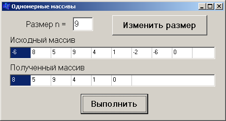

Основы программирования в среде C++ Builder
Лабораторный практикум
В практикуме изложены краткие теоретические сведения по основам алгоритмического языка С/С++ и программированию в среде C++ Builder. Содержатся примеры, реализованные в консольном и оконном приложениях среды С++ Builder, приведены 9 лабораторных работ и индивидуальные задания к ним.
СОДЕРЖАНИЕ
Лабораторная работа №1. Линейный вычислительный процесс
1.1. Общие теоретические сведения
1.2. Создание оконного приложения
1.3. Создание консольного приложения
1.4. Пример выполнения задания
Лабораторная работа №2. Реализация разветвляющихся алгоритмов
2.1. Общие теоретические сведения
2.2. Создание оконного приложения
2.3. Пример выполнения задания
Лабораторная работа №3. Реализация циклических алгоритмов
3.1. Общие теоретические сведения
3.2. Пример выполнения задания
Лабораторная работа №4. Функции пользователя
4.1. Краткие теоретические сведения
4.2. Пример выполнения задания
Лабораторная работа №5. Обработка одномерных массивов
5.1. Общие теоретические сведения
5.2. Создание оконного приложения
5.3. Пример выполнения задания
Лабораторная работа №6. Обработка двухмерных динамических массивов
6.1. Краткие теоретические сведения
6.2. Пример выполнения задания
Лабораторная работа №7. Использование строк
7.1. Общие теоретические сведения
7.2. Создание оконного приложения
7.3. Пример выполнения задания
Лабораторная работа №8. Обработка структур с использованием файлов
8.2. Создание оконного приложения
8.3. Пример выполнения задания
Лабораторная работа №9. Построение графиков функций
9.1. Краткие теоретические сведения
9.2. Пример создания оконного приложения
Приложение 1. Операции и основные математические функции
Приложение 2. Описание общих структур файлов проекта
Лабораторная работа №1. Линейный вычислительный процесс
Цель работы: изучить правила составления текстов программ, научиться реализовывать линейные алгоритмы, а также составлять каркас простейшей программы в среде C++ Builder. Написать и отладить программу линейного алгоритма в консольном и(или) оконном приложении.
1.1. Общие теоретические сведения
Алфавит языка С/С++ состоит из: прописных и строчных букв латинского алфавита, арабских цифр и специальных символов, смысл и правила использования которых будут рассматриваться далее.
В языке C применяются данные двух категорий: простые (скалярные) и сложные (составные).
К основным (базовым) типам данных относятся целый (int), вещественный (float, double) и символьный (char) типы. В свою очередь, данные целого типа могут быть короткими (short) и длинными (long), со знаком (signed) и беззнаковыми (unsigned). Атрибут long может использоваться и с типом double – длинное вещественное.
К сложным типам данных относятся массивы, структуры (struct), объединения (union) и перечисления (enum).
В языке С++ используются данные типа bool – логические, принимающие значения true (1) – истина и false (0) – ложь, а также AnsiString (String) – строковый тип данных (см. п.7.2).
Запись самоопределенных констант
Тип данных | Общий формат записи | Примеры |
Десятичные целые | n | 22 –15 176 –1925 |
Вещественные с фиксированной десятичной точкой | n.m | 1.0 –3.125 –0.001 |
Вещественные с плавающей точкой | n.mEp смысл записи n,m10p | 1.01E–10 0.12537е+4
|
Символьные | ' ' | 'A' 'х' '0' '<' |
Строковые | “ ” | “Minsk” “Press any key” |
В таблице – любой символ, набранный на клавиатуре.
Декларация объектов
Все объекты (переменные, массивы и т.д.), с которыми работает программа, необходимо декларировать. В декларации объектам присваиваются идентификаторы (ID), которые могут включать латинские буквы, символ нижнего подчеркивания «_» и цифры, причем первым символом ID не может быть цифра.
Внимание! В языке С/С++ строчные и прописные буквы имеют различные коды, т.е. PI, Pi и pi – различные идентификаторы (прил. 1).
При декларации объектам можно задавать начальные значения (инициализировать), например:
int k = 10, m = 3, n;
double c = –1.3, w = –10.23, s;
Принято использовать в ID переменных строчные буквы, а в именованных константах – прописные, например:
const double PI = 3.1415926;
double pi = 3.1415926;
Разделителями ID являются пробелы, символы табуляции, перевода строки и страницы, а также комментарии.
Комментарий – любая последовательность символов, начинающаяся парой символов /* и заканчивающаяся парой символов */ или начинающаяся // и до конца текущей строки.
Директивы препроцессора
Перед компиляцией программы с помощью директив препроцессора выполняется предварительная обработка текста программы.
Директивы начинаются с символа #; за которым следует наименование операции препроцессора. Чаще всего используются директивы include и define.
Директива #include используется для подключения к программе заголовочных файлов с декларацией стандартных библиотечных функций, например:
#include <stdio.h> – стандартные функции ввода-вывода;
#include <conio.h> – функции работы с консолью;
#include <math.h> – математические функции.
Директива #define (определить) создает макроконстанту и ее действие распространяется на весь файл, например:
#define PI 3.1415927
– в ходе препроцессорной обработки идентификатор PI везде заменяется указанным значением 3,1415927.
Операции языка С/С++ (арифметические: +,–,*,/,%) и наиболее часто использующиеся стандартные математические функции описаны в прил.1.
Операция присваивания имеет полную и сокращенную формы записи.
Полная форма: ID = выражение;
– выполняется справа налево, т.е. сначала вычисляется выражение, а затем его результат присваивается указанному ID, например: y=(x+2)/(3*x)–5;
В одном операторе можно присвоить значение нескольким переменным, например: x = y = z = 0;
или z = (x = y) * 5; – сначала переменной x присваивается значение переменной y, далее вычисляется выражение x*5 , и результат присваивается переменной z.
Сокращенная форма: ID операция= выражениe;
где операция – одна из арифметических операций + , –, *, /, %; например:
s += 7; (s = s+7;) или y *= x+3; (y = y*(x+3));
Сокращенная форма применяется, когда переменная используется в обеих частях ее полной формы.
В языке С/С++ существуют операции инкремента (--) и декремента (++), т.е. уменьшения или увеличения значения переменной на 1. Операции могут быть префиксные (++i и --i) и постфиксные (i++ и i--). При использовании данной операции в выражении в префиксной форме, сначала выполняется сама операция (изменяется значение i), и только потом вычисляется выражение. В постфиксной форме – операция применяется после вычисления выражения, например, для значений b = 7 и n = 1 будут получены следующие результаты:
1) c = b*++n; – порядок выполнения: n = n+1, c = b*n, т.е. c = 14;
2) c = b*n++; – в этом случае: c = b*n, n = n+1, т.е. c = 7 .
Интегрированная среда разработчика C++ Builder
Среда Builder визуально реализуется в виде нескольких окон, одновременно раскрытых на экране монитора. Количество, расположение, размер и вид окон может меняться пользователем в зависимости от поставленной задачи. Меню среды Builder может иметь вид, представленный на рис. 1.1.

Главное окно предназначено для управления процессом создания программы. Основное меню содержит все необходимые средства для управления проектом. Пиктограммы облегчают доступ к наиболее часто применяемым командам основного меню. Через меню компонент осуществляется доступ к набору стандартных сервисных программ среды, которые описывают некоторый визуальный элемент (компоненту), помещенный программистом в окно формы. Каждая компонента имеет определенный набор свойств, которые задаются Пользователем, например, заголовок окна, надпись на кнопке, стиль выводимого текста и т.п.
Окно инспектора объектов (вызывается нажатием клавиши F11) предназначено для изменения свойств выбранных компонент и состоит из двух страниц. Страница Properties (свойства) предназначена для изменения необходимых свойств компоненты, страница Events (события) – для определения реакции компоненты на то или иное событие, например, нажатие определенной клавиши или щелчок кнопкой мыши.
Окно формы представляет собой проект Windows-окна программы, в которое помещаются необходимые компоненты для решения поставленной задачи, причем при выполнении программы помещенные компоненты будут иметь тот же вид, что и на этапе проектирования.
Окно текста (имя Unit1.cpp), предназначено для написания, редактирования и просмотра текста программы. При первоначальной загрузке в окне текста программы находится текст, содержащий минимальный набор операторов для нормального функционирования пустой формы в качестве Windows-окна.
Программа в среде Builder составляется из функций, которые необходимо выполнить, если возникает определенное событие, связанное с формой, например, щелчок кнопкой мыши – событие OnClick, создание формы – OnCreate.
Для каждого обрабатываемого в форме события с помощью страницы Events инспектора объектов или двойным щелчком кнопкой мыши по выбранной компоненте в текст программы вставляется функция-обработчик, между символами { и } в которой записываются соответствующие действия.
Переключение между окном формы и окном текста программы осуществляется с помощью клавиши F12.
Структура программ C++ Builder
Программа в Builder состоит из множества функций, объединяемых в один проект с помощью файла проекта Project1.bpr, который создается автоматически, обрабатывается средой Builder и не предназначен для редактирования.
При создании как консольного, так и оконного приложений системой программирования автоматически формируется текстовый файл с именем Unit1.cpp.
В оконном приложении объявления классов, переменных (объектов) и функций-обработчиков (методов) находятся в заголовочном файле, имеющем то же имя, что и текстовый файл, только с расширением .h. Описание окна формы находится в файле с расширением .dfm. Файл проекта может быть только один, файлов с другими расширениями может быть несколько.
Внимание! Для того чтобы перенести проект на другой компьютер, необходимо переписать все файлы с расширениями: *.bpr, *.h, *.cpp, *.dfm.
Общий вид структур следующих файлов: текст программы (Unit1.cpp), проект (Project1.cpp), заголовочный (Unit1.h) приведен в прил. 2.
1.2. Создание оконного приложения
Настройка формы
Пустая форма в правом верхнем углу имеет кнопки управления, предназначенные для свертывания формы  , для разворачивания формы на весь экран
, для разворачивания формы на весь экран  , для возвращения к исходному размеру
, для возвращения к исходному размеру  и для закрытия формы
и для закрытия формы  . С помощью мыши, «захватывая» одну из кромок формы или выделенную строку заголовка, можно регулировать размеры формы и ее положение на экране.
. С помощью мыши, «захватывая» одну из кромок формы или выделенную строку заголовка, можно регулировать размеры формы и ее положение на экране.
Для изменения заголовка после вызова окна инспектора объектов (F11) выбирается свойство Caption, и в выделенном окошке вместо стандартного текста Form1 набирается нужный текст, например, «Лаб.раб.1. Гр.610101 Иванова А.».
Внимание! Свойства Name (имя) и Сaption (заголовок) у компонент совпадают, но имя менять не рекомендуется, т.к. оно входит в текст программы.
Компоненты, предназначенные для ввода-вывода
Если необходимо ввести из формы в программу или вывести на форму информацию, которая вмещается в одну строку, используют окно однострочного редактора текста, представляемого компонентой Edit, для чего в меню компонент Standard выбирается пиктограмма  и щелчком кнопкой мыши устанавливается в нужном месте формы. Мышью регулируются размер окошка и его положение на форме.
и щелчком кнопкой мыши устанавливается в нужном месте формы. Мышью регулируются размер окошка и его положение на форме.
В заголовочный файл Unit1.h автоматически вставляется переменная Edit* (1,2,…) класса TEdit. В поле Text (Edit1–>Text) такой переменной будет содержаться строка символов (тип AnsiString) и отображаться в соответствующем окне Edit*.
Основные функции преобразования строк
StrToFloat(St) – преобразует строку St в вещественное число;
StrToInt(St) – преобразует строку St в целое число.
FloatToStr (W) – преобразует вещественное число W в строку символов;
FloatToStrF (W, формат, n1, n2) – вещественное число W в строку символов под управлением формата:
ffFixed – фиксированное положение разделителя целой и дробной частей, n1 – общее количество цифр числа, n2 – количество цифр в дробной части, причем число округляется с учетом первой отбрасываемой цифры;
fFfExponent – n1 задает общее количество цифр мантиссы, n2 – количество цифр порядка XX (число округляется);
ffGeneral – универсальный формат, использующий наиболее удобную для чтения форму представления вещественного числа; соответствует формату ffFixed, если количество цифр в целой части n1, а само число больше 0,00001, в противном случае соответствует формату ffExponent.
FormatFloat (формат, W) – преобразует вещественное число W в строку;
IntToStr (W) – преобразует целое число W в строку символов.
Например, если значения вводимых из Edit1 и Edit2 переменны x и у имеют целый и действительный типы, соответственно, то следует записать:
х = StrToInt(Edit1–>Text);
y = StrToFloat(Edit2–>Text);
Внимание! При записи числовых значений в окошках Edit* не должно быть пробелов, а разделителем целой и дробной частей обычно является «запятая»!
В инспекторе объектов с помощью свойства Font устанавливается стиль, отражаемого в строке Edit* текста.
Компонента Label
Данная компонента используется для вывода надписей, для чего в меню компонент Standard выбирается пиктограмма  , и в нужном месте формы устанавливается надпись Label1, регулируется размер, место положения, изменяется свойство Caption инспектора объектов, в котором вводится нужный текст, например, строка “Значение X = ”, а также выбирается стиль (свойство Font).
, и в нужном месте формы устанавливается надпись Label1, регулируется размер, место положения, изменяется свойство Caption инспектора объектов, в котором вводится нужный текст, например, строка “Значение X = ”, а также выбирается стиль (свойство Font).
При установке таких компонент в текст Unit1.h вставляются переменные типа TLabel, в которых хранятся пояснительные строки. Эти строки можно изменять в процессе работы программы, например:
Label1->Caption = “”; – «очистка» строки;
Label1->Caption = “Не выполняется!”; – вывод строки.
Компонента Memo
Для вывода результатов работы программы обычно используется окно многострочного редактора текста, представленое компонентой Memo, для чего выбирается пиктограмма  , помещается на форму, регулируется ее размер и местоположение. После установки с помощью инспектора свойства ScrollBars – SSBoth в окне появятся вертикальная и горизонтальная полосы прокрутки.
, помещается на форму, регулируется ее размер и местоположение. После установки с помощью инспектора свойства ScrollBars – SSBoth в окне появятся вертикальная и горизонтальная полосы прокрутки.
При установки данной компонеты в Unit1.h прописывается переменная Memo1 типа ТMemo. Информация, выводимая построчно в окне Memo1, находится в массиве строк Memo1–>Lines, каждая из которых имеет тип String.
Для очистки окна используется метод Memo1–>Clear( ).
Для добавления новой строки используется метод Memo1–>Lines–>Add( ).
Если нужно вывести числовое значение, то его надо преобразовать к типу AnsiString (см. прил. 4) и добавить в массив Memo1–>Lines, например, вывести int u = 100;
double w = –256.38666;
в результате записей
Memo1–>Lines–>Add (“ Значение u = ”+IntToStr(u));
Memo1–>Lines–>Add (“ Значение w = ”+FloatToStrF(w,ffFixed,8,2));
появятся строки
Значение u = 100
Значение w = –256.39
При этом под все число отводится восемь позиций, из которых две позиции занимает его дробная часть.
Если выводимая информация превышает размер окна Memo1, то для просмотра используются полосы прокрутки.
Обработка событий
Напомним, что программа в среде Builder представляет собой набор функций, выполняющих обработку событий, связанных с формой, например, щелчок кнопкой мыши – событие OnClick, создание формы – событие OnCreate.
Функция-обработчик FormCreate
При запуске программы возникает событие «создание формы» (OnCreate). Оформим функцию-обработчик этого события, которая обычно используется для инициализации начальных установок, таких, как, например, занести начальные значения исходных данных в соответствующие окна Edit*, очистить окно Memo.
Для этого делаем двойной щелчок кнопкой мыши на любом свободном месте формы, после чего в листинг программы (Unit1.cpp) автоматически вносится заготовка для создания функции: ее заголовок … FormCreate (…) и фигурные скобки.
Между символами { }, которые обозначают начало и конец функции, соответственно, вставляем нужный текст программы (см. пример, п. 1.4.1).
Внимание! Не набирайте заголовки функций-обработчиков вручную.
Функция-обработчик нажатия кнопки (Button*Click)
Выбрав в меню Standard пиктограмму  , помещаем на форму компоненту Button1 (2,3,…). С помощью инспектора объектов изменяем заголовок (Caption) на текст, например, «Выполнить», регулируем положение и размер кнопки. Двойным щелчком кнопкой мыши по компоненте Button1 в текст программы вставляем заготовку ее функции-обработчика … Button1Click (…) { }. Между фигурными скобками набираем соответствующий код.
, помещаем на форму компоненту Button1 (2,3,…). С помощью инспектора объектов изменяем заголовок (Caption) на текст, например, «Выполнить», регулируем положение и размер кнопки. Двойным щелчком кнопкой мыши по компоненте Button1 в текст программы вставляем заготовку ее функции-обработчика … Button1Click (…) { }. Между фигурными скобками набираем соответствующий код.
Запуск и работа с программой
Перед запуском программы на обработку следует сохранить программу, для чего нужно выбрать в меню File пункт Save All.
Запустить программу можно, нажав Run в главном меню Run, или клавишу F9, или пиктограмму  . При этом происходит трансляция и, если нет ошибок, компоновка программы и создание единого загружаемого файла с расширением .exe. На экране появляется активная форма программы (см. рис.1.2).
. При этом происходит трансляция и, если нет ошибок, компоновка программы и создание единого загружаемого файла с расширением .exe. На экране появляется активная форма программы (см. рис.1.2).
Завершить работу программы можно, нажав кнопку  на форме или выбрав ProgramReset в главном меню Run.
на форме или выбрав ProgramReset в главном меню Run.
1.3. Создание консольного приложения
Программа, написанная на языке С/С++, состоит из одной или нескольких функций, одна из которых обязательно имеет идентификатор (имя) main – основная, главная. Ее назначение – управление всей работой программы (проекта).
Наиболее ощутимые отличия консольного и оконного приложений среды программирования C++ Builder – организация ввода-вывода данных.
Стандартные функции вывода информации
Для вывода информации в консольном приложении чаще всего используются следующие функции:
puts(S) – вывод строки символов S с переходом на начало новой строки и вывод данных с форматированием;
рrintf (управляющая строка, список объектов вывода);
управляющая строка – заключенная в кавычки строка, содержащая спецификации преобразования объектов вывода, управляющие символы (признак «\») и любой набор символов, использующийся в качестве поясняющего текста – указывает компилятору вид выводимой информации;
список объектов вывода – печатаемые объекты (константы, переменные или выражения, вычисляемые перед выводом). Данные, указанные в списке выводятся в соответствии со спецификациями управляющей строки.
Спецификации преобразования имеют вид
% <флаг> <размер поля . точность> спецификация
флаг: – (минус) выравнивание влево (по умолчанию выполняется выравнивание вправо); + (плюс) выводится знак положительного числа;
размер поля – задает ширину поля вывода (количество символов), при недостаточном значении выполняется автоматическое расширение;
точность – задает количество цифр в дробной части числа;
спецификация – формат преобразования выводимого объекта.
Приведем основные форматы печати:
%d – десятичные целые (int); %c – один символ (char);
%s – строка символов (string); %f – данные типа float;
%ld – длинное целое; %lf – данные типа double;
%x – шестнадцатеричные данные; %o – восьмеричные данные.
При необходимости вывода управляющих символов ( % \ и т.п.) их нужно указать 2 раза, например:
printf("Только %d%% предприятий не работало. \n",5);
получим:
Только 5% предприятий не работало.
Управляющие символы: \n – переход на новую строку; \t – горизонтальная; \v – вертикальная табуляция; \b – возврат назад на один символ; \r – возврат в начало строки; \a – звуковой сигнал; \f – прогон бумаги до начала новой страницы; \? – знак вопроса.
Стандартные функции ввода информации
Функция gets (S) обеспечивает ввод строки символов S до нажатия клавиши Enter, т.е. позволяет ввести строку, содержащую пробелы.
Для форматированного ввода информации любого вида предназначена функция
scanf (управляющая строка, список адресов объектов ввода);
в управляющей строке которой указываются только спецификации преобразований, а в списке объектов ввода – адреса вводимых скалярных переменных, для чего перед ID переменной указывается операция &, обозначающая «взять адрес». Для ввода значений строковых (составных) переменных символ & не указывается. При использовании формата %s строка вводится до первого пробела.
Пример ввода данных int а, double b, и char str[20]:
scanf ( "%d %lf %s", &a, &b, str);
Вводить данные можно как в одной строке через пробел, так и в разных строках.
1.4. Пример выполнения задания
Cоставить программу вычисления арифметического выражения для заданных значений x, y, z :
 .
.
1.4.1. Пример создания оконного приложения
В оконном режиме панель диалога программы создать в виде, представленном на рис. 1.2.
Рис. 1.2
Для создания проекта необходимо выполнить следующие действия.
1. Запускаем С++ Builder. Создаем в разрешенной для Пользователя папке (d:\work\ или c:\work\) папку с номером группы (\610101\), открыв ее, сохраняем предлагаемые файлы Unit1.cpp и Project1.cpp (рекомендуем без изменения).
2. Оформляем окно формы, заменив заголовок Form1 на нужный текст. Помещаем на форму необходимые компоненты Label1, Label2, Label3, Label4 (вставляя в Caption соответствующие тексты), Edit1, Edit2, Edit3, Memo1 c полосами прокрутки (см. п. 1.3), Button1 (заменив в Caption текст).
Используя свойство Font, выбираем стили выводимых текстов.
3. Оформляем листинг программы (Unit1.cpp). Двойным щелчком кнопкой мыши по свободному месту формы создаем функцию FormCreate и заполняем ее (см. пример). Переходим на форму (F12), щелкаем дважды по кнопке «ВЫПОЛНИТЬ» и заполняем созданную функцию Button1Click (см. пример).
4. Перед запуском программы на обработку, сохраняем все.
5. Запускаем проект на выполнение, исправляем ошибки.
Текст программы может иметь следующий вид (наклонным мелким шрифтом выделен текст, редактировать который не рекомендуется):
//---------------------------------------------------------------------------
#include <vcl.h>
#pragma hdrstop
#include "Unit1.h"
#include "math.h"
//---------------------------------------------------------------------------
#pragma package(smart_init)
#pragma resource "*.dfm"
TForm1 *Form1;
//---------------------------------------------------------------------------
__fastcall TForm1::TForm1(TComponent* Owner)
: TForm(Owner)
{
}
//---------------------------------------------------------------------------
void __fastcall TForm1::FormCreate(TObject *Sender)
{
Edit1->Text = "3,4";
Edit2->Text = "7,4e-2";
Edit3->Text = "1,943e2";
Memo1->Clear();
Memo1->Lines->Add("Лабораторная работа № 1");
}
//---------------------------------------------------------------------------
void __fastcall TForm1::Button1Click(TObject *Sender)
{
double x, y, z, a, b ,c, rez;
x = StrToFloat(Edit1->Text);
y = StrToFloat(Edit2->Text);
z = StrToFloat(Edit3->Text);
a = pow(tan(x+y),2);
b = exp(y-z);
c = sqrt(cos(x*x)+sin(z*z));
rez = a-b*c;
Memo1->Lines->Add("При х = "+FloatToStrF(x,ffFixed,7,3)
+ "; y = "+FloatToStrF(y,ffFixed,7,3)+"; z = "+FloatToStrF(z,ffFixed,7,3));
Memo1->Lines->Add("Результат = "+FloatToStr(rez));
}
Внимание! В строковых константах разделитель целой и дробной частей – запятая: Edit1->Text = "3,4"; в отличие от числовых констант в тексте программы.
В результате должно получиться рабочее окно (рис. 1.3). Если щелкнуть мышью по кнопке «ВЫПОЛНИТЬ», в окне Memo1 появится соответствующий текст (результат). Далее в окошках Edit* можно изменять исходные значения и, нажимая кнопку «ВЫПОЛНИТЬ», получать новые результаты.
Рис. 1.3
1.4.2. Создание консольного приложения
Чтобы создать проект в консольном приложении, выполняем следующую последовательность действий: File Close All File New Other Console Wizard Ok. Закрываем все окошки, кроме 5 (см. рис 1.1), которое в консольном приложении будет иметь вид
Текст программы может иметь следующий вид:
//---------------------------------------------------------------------------
#include <vcl.h>
#include <stdio.h>
#include <conio.h>
#include <math.h>
#pragma hdrstop
//---------------------------------------------------------------------------
#pragma argsused
int main(int argc, char* argv[])
{
double x, y, z, a, b ,c, rez;
puts("\n\tx,y,z = ");
scanf("%lf%lf%lf", &x, &y, &z);
a = pow(tan(x+y),2);
b = exp(y-z);
c = sqrt(cos(x*x)+sin(z*z));
rez = a-b*c;
printf("\n x = %7.3lf\n y = %7.3lf\n z = %7.3lf\nRezult = %lf\n", x, y, z, rez);
puts("Press any key ... ");
getch();
return 0;
}
Для исходных данных x = 3,4; y = 7,410-2; z = 1,943102, результат выполнения программы выглядит следующим образом:

1.5. Индивидуальные задания
Создать программу вычисления указанной величины. Результат проверить при заданных исходных значениях.
1. | При x = 14.26, y = –1.22, z = 3.510-2 : 0.564846. |
2. | При x = –4.5, y = 0.7510-4, z = 0.845102 : –55.6848. |
3. | При x = 3.7410-2, y = –0.825, z = 0.16102 : 1.0553. |
4. | При x = 0.4104, y = –0.875, z = –0.47510-3 : 1.9873. |
5. | При x = –15.246, y = 4.64210-2, z = 20.001102 : –182.036. |
6. | При x = 16.5510-3, y = –2.75, z = 0.15 : 40.630694. |
7. | При x = 0.1722, y = 6.33, z = 3.2510-4 : –205.305571. |
8. | При x = –2.23510-2, y = 2.23, z = 15.221 : 39.374. |
9. | При x = 1.825102, y = 18.225, z = –3.29810-2 : 1.2131. |
10. | При x = 3.98110-2, y = –1.625 103, z = 0.512 : 1.26185. |
11. | При x = 6.251, y = 0.827, z = 25.001 : 0.7121. |
12. | При x = 3.251, y = 0.325, z = 0.46610-4 : 4.251433. |
13. | При x = 17.421, y = 10.36510-3, z = 0.828105 : 0.33056. |
14. | При x = 12.310-1, y = 15.4, z = 0.252103 : 82.825623. |
15. | При x = 2.444, y = 0.86910-2, z = –0.13103 : –0.49871. |
16. | При x = –2.23510-2, y = 2.23, z = 15.221 : 39.374. |


Лабораторная работа №2. Реализация разветвляющихся алгоритмов
Цель работы: изучить операции сравнения, логические операции, операторы передачи управления if, switch, break, научиться пользоваться простейшими компонентами организации переключений (СheckBox, RadioGroup). Написать и отладить программу с разветвлениями.
2.1. Общие теоретические сведения
Оператор условной передачи управления if
Для выбора одной из ветвей вычислений применяется оператор условного перехода:
if (выражение) оператор 1;
else оператор 2;
вычисляется выражение, и если его значение не равно 0 (истинно), то выполняется оператор 1, иначе – оператор 2, например:
if(x>y) max = x;
else max = y;
Если операторы 1, 2 содержат более одного оператора, то они заключаются в фигурные скобки { }, т.е. применяется блок.
Конструкция else… может отсутствовать и такую форму называют сокращенной, тогда в случае ложности условия управление передается на следующий за if оператор.
Если операторы 1, 2 в свою очередь являются операторами if, то такой оператор называют вложенным, при этом ключевое слово else принадлежит ближайшему предшествующему if.
Например, найти наибольшее значение из трех чисел x, y, z:
if (x>y)
if (x>z) max=x;
else max=z;
else if(y>z) max=y;
else max=z;
Операции сравнения: < (меньше), <= (меньше или равно), > (больше), >= (больше или равно), != (не равно), = = (равно). Пары символов разделять нельзя.
Операции сравнения бинарные, их общий вид:
Операнд 1 знак операции Операнд 2
Операндами операций сравнения могут быть данные любых базовых типов, значения которых перед сравнением преобразуются к одному типу.
Логические операции используются в качестве условий при составлении более сложных выражений. Приведем их перечень в порядке убывания приоритета:
! (отрицание или логическое НЕ – унарная операция), && (конъюнкция или логическое И), || (дизъюнкция или логическое ИЛИ).
Например: (0<x)&&(x<=100)
((!x)&&(y>0)||((z==1)&&(k>0))
Выражения вычисляются слева направо, причем их вычисление прекращается, как только результат становится известен.
Тернарная (условная) операция ?:
Ее общая форма:
Операнд 1 ? Операнд 2 : Операнд 3
Если значение операнда 1 истинно (не равно 0), то результатом операции является операнд 2, иначе – операнд 3.
Например, найти наибольшее из двух чисел: max = a>b ? a : b;
Оператор выбора switch
Общая форма оператора выбора (переключателя):
switch(выражение) {
case const_1: операторы; break;
…
case const_N: операторы; break;
default: операторы;
}
Вычисляется выражение и проверяется, совпадает ли его результат со значением одной из констант. При совпадении выполняются операторы этого case. Значениями const_1,…, const_N могут быть только целые или символьные константы. Конструкция default выполняется, если результат выражения не совпал ни с одной из констант, и может отсутствовать. Оператор break выполняет досрочный выход из switch (после выполнения ветви case все остальные будут опущены). Если оператор break в case не записан, то будут выполняться операторы следующих ветвей case до появления оператора break, либо до завершения оператора switch.
Например:
switсh(i) {
case 1: f=pow(x,2); break;
case 2: f=fabs(x); break;
case 3: f=sqrt(x); break;
default: printf(“Ошибка!”); exit(1);
}
f=f+5;
2.2. Создание оконного приложения
При создании оконного приложения для организации разветвлений используются компоненты в виде кнопок-переключателей. Состояние такой кнопки (включено/выключено) визуально отражается на форме. На форме (рис. 2.1) представлены кнопки-переключатели двух типов TCheckBox и TRadioGroup.
Компонента CheckBox создает кнопку независимого переключателя, с помощью которой Пользователь может указать свое решение типа да/нет. В программе состояние кнопки связано со значением булевой переменной, которая проверяется с помощью оператора if.
Компонента Radiogroup создает группу кнопок – зависимых переключателей. При нажатии одной из кнопок группы все остальные кнопки отключаются. В программу передается номер включенной кнопки (0,1,2,…), который анализируется с помощью оператора switсh.
В языке C++ используются переменные типа bool, которые могут принимать только два значения – true и false (истина – 1, ложь – 0).
2.3. Пример выполнения задания
Ввести исходные данные x, y, z. Вычислить значение u в зависимости от выбора: sin(x), cos(x) или tg(x), после чего определить максимальное либо из u, y, z, либо из их модулей – |u|, |y|, |z|.
2.3.1. Реализация примера оконного приложения
Cоздать форму, представленную на рис. 2.1, скорректировать текст надписей, положение окон Edit и написать соответствующую программу.
Компонента СheckBox
В меню Standard выберите пиктограмму  , поместите ее в нужное место формы, измените заголовок Caption на «max модулей», после чего в тексте программы появится переменная CheckBox1 типа TСheckBox. В зависимости от того, сделан выбор или нет, булева переменная CheckBox1->Checked будет принимать значение true или false.
, поместите ее в нужное место формы, измените заголовок Caption на «max модулей», после чего в тексте программы появится переменная CheckBox1 типа TСheckBox. В зависимости от того, сделан выбор или нет, булева переменная CheckBox1->Checked будет принимать значение true или false.
Компонента RadioGroup
В меню Standard выберите пиктограмму  , поместите ее в нужное место формы. На форме появится окаймленный линией чистый прямоугольник с заголовком RadioGroup1. Замените заголовок (Caption) на «Выбор функции».
, поместите ее в нужное место формы. На форме появится окаймленный линией чистый прямоугольник с заголовком RadioGroup1. Замените заголовок (Caption) на «Выбор функции».
В инспекторе объектов в свойстве Items вызовите строчный редактор списка заголовков кнопок и наберите три строки с именами выбираемых функций (cos(x), sin(x), tg(x)), нажмите ОК. После этого внутри компоненты появятся три кнопки-переключателя с введенными надписями.
В тексте Unit1.h появилась переменная RadioGroup1 типа TRadioGroup. Теперь при нажатии одной из кнопок группы в переменной целого типа RadioGroup1->ItemIndex будет находиться номер выбранной строчки (отсчитывается от нуля).
В функции FormCreate() желательно установить начальное значение этой переменной, например, RadioGroup1->ItemIndex = 0.
Подготовив форму, создайте функции-обработчики событий FormСreate и Botton1Сlick аналогично первой работе. Текст функций приведен в примере.
Запустите программу и убедитесь в том, что все ветви алгоритма выполняются правильно. Форма приведена на рис. 2.1.
Рис. 2.1
Текст программы может быть следующим:
//---------------------------------------------------------------------------
#include <vcl.h>
#pragma hdrstop
#include "Unit1.h"
#include "math.h"
//---------------------------------------------------------------------------
#pragma package(smart_init)
#pragma resource "*.dfm"
TForm1 *Form1;
//---------------------------------------------------------------------------
__fastcall TForm1::TForm1(TComponent* Owner)
: TForm(Owner)
{
}
//---------------------------------------------------------------------------
void __fastcall TForm1::FormCreate(TObject *Sender)
{
Edit1->Text="0,1";
Edit2->Text="0,356";
Edit3->Text="-3,5";
Memo1->Clear();
Memo1->Lines->Add("Лабораторная работа 2");
RadioGroup1->ItemIndex = 0;
}
//---------------------------------------------------------------------------
void __fastcall TForm1::Button1Click(TObject *Sender)
{
double x,y,z,u,ma;
x=StrToFloat(Edit1->Text);
y=StrToFloat(Edit2->Text);
z=StrToFloat(Edit3->Text);
// Проверка номера нажатой кнопки и выбор соответствующей функции
switch(RadioGroup1->ItemIndex){
case 0: u=cos(x);
Memo1->Lines->Add("Cos(x)= "+FloatToStrF(u,ffFixed,8,6));
break;
case 1: u=sin(x);
Memo1->Lines->Add("Sin(x)= "+FloatToStrF(u,ffFixed,8,6));
break;
case 2: u=tan(x);
Memo1->Lines->Add("Tg(x)= "+FloatToStrF(u,ffFixed,8,6));
break;
}
// Проверка состояния кнопки CheckBox1
if (CheckBox1->Checked){
u = fabs(u);
y = fabs(y);
z = fabs(z);
}
// Нахождение максимального из трех чисел
if (u>y) ma=u;
else ma=y;
if (z>ma) ma=z;
if (CheckBox1->Checked)
Memo1->Lines->Add("Max модулей= "+FloatToStrF(ma,ffFixed,8,6));
else Memo1->Lines->Add("Max= "+FloatToStrF(ma,ffFixed,8,6));
}
2.3.1. Пример написания программы консольного приложения
Текст программы может иметь вид
//---------------------------------------------------------------------------
#include <vcl.h>
#include <conio.h>
#include <stdio.h>
#include <math.h>
#pragma hdrstop
//---------------------------------------------------------------------------
#pragma argsused
int main(int argc, char* argv[])
{
double x,y,z,u,ma;
int kod;
puts("Input x, y, z");
scanf("%lf%lf%lf",&x, &y, &z);
puts("Function U(x):\n 0 - cos(x)\n 1 - sin(x)\n 2 - tan(x)");
scanf("%d", &kod);
switch(kod){
case 0: u=cos(x); printf("\n\tCos(x)= %8.6lf",u); break;
case 1: u=sin(x); printf("\n\Sin(x)= %8.6lf",u); break;
case 2: u=tan(x); printf("\n\Tg(x)= %8.6lf",u); break;
}
puts("\nMax ABS - 1, Else - Max");
scanf("%d", &kod);
if (kod == 1){
u = fabs(u);
y = fabs(y);
z = fabs(z);
}
if (u>y) ma=u;
else ma=y;
if (z>ma) ma=z;
if (kod==1)printf("Max ABS = %8.6lf", ma);
else printf("Max = %8.6lf", ma);
puts("\nPress any key ... ");
getch();
return 0;
}
Результаты выполнения программы:
2.4. Индивидуальные задания
Вычислить значение y в зависимости от выбранной функции (x), аргумент которой определяется из поставленного условия. Возможные значения функции (x): 2x, x2, х/3 (в оконном приложениии выбор выполнить с помощью компоненты RadioGroup). Предусмотреть вывод сообщений, показывающих, при каком условии и с какой функцией производились вычисления у.
 , где
, где 
 , где
, где 
-
 , где
, где 
-
 , где
, где 
-
 , где
, где 
-
 , где
, где 
-
 , где
, где 
-
 , где
, где 
-
 , где
, где 
 , где
, где 
 , где
, где 
 , где
, где 
 , где
, где 
 , где
, где 
 , где
, где 
 , где
, где
Лабораторная работа №3. Реализация циклических алгоритмов
Цель работы: изучить циклические операторы while, do-while, for, научиться реализовывать циклические алгоритмы. Изучив простейшие средства отладки программ в среде C++ Builder, составить и отладить программу.
3.1. Общие теоретические сведения
Под циклом понимается многократное выполнение одних и тех же операторов при различных значениях промежуточных данных. Число повторений может быть задано в явной или неявной формах. Для организации повторений в языке C++ используются три различных оператора цикла.
1. Оператор цикла с предусловием
while (выражение)
код цикла
организует повторение операторов кода цикла до тех пор, пока выражение истинно (не равно 0), если выражение = 0 (ложно) при первом входе, то код цикла не выполнится ни разу. Если код цикла состоит более чем из одного оператора, то организуется блок.
2. Оператор цикла с постусловием
do
код цикла
while (выражение);
организует повторение кода цикла до тех пор, пока выполнится выражение истинно, после чего управление передается следующему за циклом оператору. Данный оператор гарантирует выполнение кода цикла хотя бы один раз.
3. Оператор с предусловием и коррекцией
for (выражение 1; выражение 2; выражение 3)
код цикла
где выражение 1 – начальное значение параметра цикла; выражение 2 – проверка условия на продолжение цикла; выражение 3 – изменение (коррекция) параметра цикла.
Вначале вычисляется выражение 1, затем проверяется выражение 2, если оно – истинно, то выполняется код цикла, затем производится коррекция в выражении 3, и так до тех пор, пока выражение 2 не примет значение «ложь».
Досрочный выход из операторов цикла выполняет оператор break, а оператор continue выполняет передачу управления в головной оператор цикла.
Средства отладки программ в C++ Builder
Практически в каждой вновь написанной программе после запуска обнаруживаются ошибки.
Синтаксические ошибки связаны с неправильной записью операторов. При обнаружении таких ошибок компилятор Builder останавливается напротив оператора, в котором она обнаружена. В нижней части экрана появляется текстовое окно, содержащее сведения обо всех ошибках, найденных в проекте, в каждой строке которого указаны имя файла, номер строки и характер ошибки.
Для быстрого перехода к интересующей ошибке нужно дважды щелкнуть кнопкой мыши по строке с ее описанием, а для получения более полной информации – обратиться к HELP нажатием клавиши F1.
Ошибки семантические связаны с неверным выбором алгоритма решения или с неправильной программной реализацией задачи. Эти ошибки проявляются обычно в том, что результат расчета оказывается неверным (переполнение, деление на ноль и др), поэтому перед использованием отлаженной программы ее надо протестировать, т.е. выполнить при значениях исходных данных, для которых заранее известен результат. Если тестовые расчеты указывают на ошибку, то для ее поиска следует использовать встроенные средства отладки среды Builder.
В простейшем случае для поиска места ошибки рекомендуется выполнить следующие действия.
В окне редактирования текста установить курсор в строке перед подозрительным участком и нажать клавишу F4 (выполнение до курсора) – выполнение программы будет остановлено на строке, содержащей курсор. Чтобы увидеть, чему равно значение интересующей переменной, нужно поместить на переменную курсор – на экране будет высвечено ее значение, либо нажать Ctrl+F7 и в появившемся диалоговом окне указать эту переменную (с помощью данного окна можно также изменить значение переменной во время выполнения программы).
Нажимая клавишу F7 (пошаговое выполнение), построчно выполнять программу, контролируя изменение тех или иных переменных и правильность вычислений. Если курсор находится внутри цикла, то после нажатия F4 расчет останавливается после одного выполнения кода цикла;
Для продолжения расчетов следует нажать <Run> в меню Run.
3.2. Пример выполнения задания
Написать и отладить программу вывода всех значений функции S(x) для аргумента х, изменяющегося в интервале от а до b c шагом h и заданном n.
 .
.
Панель диалога и полученные результаты представлены на рис. 3.1.
3.2.1. Пример создания оконного приложения
Текст функций-обработчиков может быть следующим (стандартный текст опущен):
//---------------------------------------------------------------------------
void __fastcall TForm1::FormCreate(TObject *Sender)
{
Edit1->Text="0,1"; Edit2->Text="1,0";
Edit3->Text="10"; Edit4->Text="0,2";
Memo1->Lines->Add("Лабораторная работа 3");
}
Рис. 3.1
//---------------------------------------------------------------------------
void __fastcall TForm1::Button1Click(TObject *Sender)
{
double a, b, x, h, r, s;
int n, zn = -1, k;
a = StrToFloat(Edit1->Text);
b = StrToFloat(Edit2->Text);
n = StrToInt(Edit3->Text);
h = StrToFloat(Edit4->Text);
for(x = a; x<=b; x+=h) {
r = s = 1;
for(k = 1; k<=n; k++) {
r = zn*r*x/k;
s+=r;
}
Memo1->Lines->Add("при x= "+FloatToStrF(x,ffFixed,8,2)
+" сумма= "+FloatToStrF(s,ffFixed,8,5));
}
}
//---------------------------------------------------------------------------
void __fastcall TForm1::Button2Click(TObject *Sender)
{
Memo1->Clear();
}
3.2.2. Пример создания консольного приложения
Текст программы предложенного задания может иметь вид
#include <vcl.h>
#include <stdio.h>
#include <conio.h>
#pragma hdrstop
#pragma argsused
int main(int argc, char* argv[])
{
double a, b, x, h, r, s;
int n, zn = -1, k;
puts("Input a,b,h,n");
scanf("%lf%lf%lf%d", &a, &b, &h, &n);
for(x = a; x<=b; x+=h) {
r = s = 1;
for(k = 1; k<=n; k++) {
r=zn*r*x/k;
s+=r;
}
printf("\n x= %8.2lf sum= %8.5lf", x,s);
}
puts("\nPress any key ... ");
getch();
return 0;
}
Результат программы с введенными значениями a=0.1, b=1.0, h=0.2 и n=10:
3.3. Индивидуальные задания
Для каждого x, изменяющегося от a до b с шагом h, найти значения функции Y(x), суммы S(x) и |Y(x)–S(x)| и вывести в виде таблицы. Значения a, b, h и n вводятся с клавиатуры. Так как значение S(x) является рядом разложения функции Y(x), при правильном решении значения S и Y для заданного аргумента x (для тестовых значений исходных данных) должны совпадать в целой части и в первых двух-четырех позициях после десятичной точки.
Работу программы проверить для a = 0,1; b = 1,0; h = 0,1; значение параметра n выбрать в зависимости от задания.

2. 
 .
.
3. 
 .
.
4. 
 .
.
5. 
 .
.
6. 
 .
.
7.  ,
,  .
.
8.  ,
,  .
.
9.  ,
,  .
.
10.  ,
,  .
.
11.  ,
,  .
.
12.  ,
,  .
.
13.  ,
,  .
.
14.  ,
,  .
.
15.  ,
,  .
.
16. 
 .
.
Лабораторная работа №4. Функции пользователя
Цель работы: познакомиться с механизмом составления и организации взаимодействия пользовательских функций, составить и отладить программу.
4.1. Краткие теоретические сведения
Подпрограмма – это именованная и определенным образом оформленная группа операторов, вызываемая по мере необходимости.
В языке С++ в качестве подпрограмм используют функции, которые должны быть декларированы до их первого использования. Предварительное описание функции называется прототипом, который обычно размещается в начале программы (*.cpp) либо в заголовочном файле (*.h) и сообщает компилятору о том, что далее в программе будет приведен ее полный текст, т.е. реализация.
Описание прототипа имеет следующий вид:
тип_результата ID_функции (список типов параметров);
а определение функции имеет следующую структуру:
тип_результата ID_функции (список параметров)
{
код функции
return результат;
}
Результат возвращается из функции в точку вызова при помощи оператора return и преобразуется к типу, указанному в заголовке функции. Если тип функции не указан, то по умолчанию устанавливается тип int, если же функция не возвращает результата, то следует указать пустой тип void. Список параметров состоит из перечня типов и ID параметров, разделенных запятыми.
Из функции можно передать только одно значение, при необходимости возвратить несколько – в списке параметров используют указатели.
Пример реализации функции, определяющей наименьшее из двух целых чисел:
int Min_x_y(int x, int y) {
return (x<y) ? x : y;
}
Вызов функции имеет следующий формат:
ID_функции(список аргументов);
где в качестве аргументов можно использовать константы, переменные, выражения (их значения перед вызовом функции будут компилятором определены). Аргументы списка вызова должны совпадать со списком параметров вызываемой функции по количеству и порядку следования параметров, а типы аргументов при передаче будут преобразованы к указанным в функции типам параметров.
Вызов предыдущей функции может иметь вид: min = Min_x_y(a, b);
Область действия переменных
Область действия переменной – это правила, которые устанавливают, какие данные доступны из текущего места программы, и определяют переменные двух типов: глобальные и локальные.
Глобальные переменные объявляются вне какой-либо функции и могут быть использованы в любом месте программы, но перед их первым использованием они должны быть объявлены и инициализированы. Область действия глобальных переменных – вся программа с момента их объявления. При объявлении глобальные переменные обнуляются.
Область действия локальных переменных – это блоки, где они объявлены. К локальным относятся и формальные параметры в заголовке функций пользователя с бластью действия – кодом функции. При выходе из блока значения локальных переменных теряются.
В языке С каждая переменная принадлежит одному из четырех классов памяти – автоматической (auto), внешней (extern), статической (static) и регистровой (register). Тип памяти указывается перед спецификацией типа, например, register int a; или static double b; По умолчанию устанавливается класс auto и переменные размещаются в стеке.
Указатель на функцию
Функции могут быть использованы в качестве формальных параметров, для этого используется указатель на функцию. Например, указатель р на функцию, возвращающую результат типа double и имеющую два параметра doublet и int, объявляется следующим образом:
double (*p)(double, int);
Используя операцию typedef, тип такого указателя может быть объявлен так
typedef double (*TFun)(double, int);
4.2. Пример выполнения задания
Написать программу вычисления выбранной функции, вид которой в свою очередь передается в качестве параметра в функцию вывода (Out_Rez).
4.2.1. Создание оконного приложения
Панель диалога с полученными результатами представлена на рис. 4.1, а текст программы может иметь следующий вид:
. . .
#include "math.h"
//------------ Декларация типа указателя на функции -------------------------
typedef double (*TFun)(double);
//------------Декларации прототипов функций Пользователя ---------------
double fun1(double);
double fun2(double);
void Out_Rez(TFun, double, double, double, TMemo*);
//---------------------------------------------------------------------------
void __fastcall TForm1::FormCreate(TObject *Sender)
{
Edit1->Text="0,1"; Edit2->Text="3"; Edit3->Text="0,3";
Memo1->Clear(); Memo2->Clear();
RadioGroup1->ItemIndex=0;
}
//---------------------------------------------------------------------------
void __fastcall TForm1::Button1Click(TObject *Sender)
{
double a, b, h;
a = StrToFloat(Edit1->Text);
b = StrToFloat(Edit2->Text);
h = StrToFloat(Edit3->Text);
switch(RadioGroup1->ItemIndex) {
case 0: Out_Rez (fun1,a,b,h,Memo1); break;
case 1: Out_Rez (fun2,a,b,h,Memo2); break;
}
}
Рис. 4.1
//---------- Реализации функций Пользователя ---------------------------------
double fun1( double r){
return 2*exp(r*r);
}
double fun2(double r) {
return pow(sin(r), 2);
}
void Out_Rez (TFun f,double xn,double xk,double h,TMemo *mem) {
for(double x=xn; x<=xk; x+=h)
mem->Lines->Add(" x = "+FloatToStrF(x,ffFixed,8,2)+
" y = "+FloatToStrF(f(x),ffFixed,8,4));
}
4.2.2. Создание консольного приложения
Текст программы может выглядеть следующим образом:
. . .
typedef double (*TFun)(double); // Декларация типа указателя на функцию
double fun1(double); // Декларации прототипов функций
double fun2(double);
void Out_Rez (TFun,double,double,double);
void main()
{
double a, b, h;
puts("Input a,b,h"); scanf("%lf%lf%lf", &a, &b, &h);
puts("\n\t Function - 2*exp(x)"); Out_Rez (fun1,a,b,h);
puts("\n\t Function - sin(x)*sin(x)"); Out_Rez (fun2,a,b,h);
puts("\n Press any key ... ");
getch();
}
//---------- Реализации функций пользователя ---------------------------------
double fun1( double r){
return 2*exp(r*r);
}
double fun2(double r) {
return pow(sin(r), 2);
}
void Out_Rez (TFun f,double xn,double xk,double h) {
for(double x=xn; x<=xk; x+=h)
printf(" x = %5.2lf, y = %8.4lf\n",x,f(x));
}
Результат выполнения программы:
4.3. Индивидуальные задания
По заданию лабораторной работы №3 написать программу расчета выбранной функции Y(x), или S(x) (желательно и |Y(x)–S(x)|), вид которой в свою очередь передается в качестве параметра в функцию вывода (Out_Rez).
Лабораторная работа №5. Обработка одномерных массивов
Цель работы: изучить составной тип данных – массив, основные свойства компоненты StringGrid. Написать и отладить программу с использованием одномерных массивов.
5.1. Общие теоретические сведения
Массив – конечная последовательность данных одного типа. Массив – объект сложного типа, каждый элемент которого определяется именем (ID) и целочисленным значением индекса (номера), по которому к элементу массива производится доступ. Рассмотрим одномерные массивы.
Внимание! Индексы массивов в языке С/С++ начинаются с 0.
В программе одномерный массив декларируется следующим образом:
тип ID массива [размер];
где размер – указывает количество элементов в массиве. Размер массива может задаваться константой или константным выражением. Для использования массивов переменного размера существует отдельный механизм – динамическое выделение памяти.
Примеры декларации массивов:
int a[5];
double b[4] = {1.5, 2.5, 3.75};
в целочисленном массиве а первый элемент а[0], второй – а[1], …, пятый – а[4]. Для массива b, состоящего из действительных чисел, выполнена инициализация, причем элементы массива получат следующие значения: b[0]=1.5, b[1]=2.5, b[2]=3.75, b[3]=0.
В языке С/С++ не проверяется выход индекса за пределы массива. Корректность использования индексов элементов массива должен контролировать программист.
Примеры описания массивов:
const Nmax=10; – задание максимального значения;
typedef double mas1[Nmax*2]; – описание типа одномерного массива;
mas1 a; – декларация массива а типа mas1;
int ss[10]; – массив из десяти целых чисел.
Элементы массивов могут использоваться в выражениях так же, как и обычные переменные, например:
f = 2*a[3] + a[Ss[i] + 1]*3;
a[n] = 1 + sqrt(fabs(a[n–1]));
5.2. Создание оконного приложения
Компонента StringGrid
При работе с массивами ввод и вывод значений обычно организуется с использованием компоненты StringGrid, предназначенной для отображения информации в виде двухмерной таблицы, каждая ячейка которой представляет собой окно однострочного редактора (аналогично окну Edit). Доступ к информации осуществляется с помощью элемента Cells[ACol][ARow] типа AnsiString, где целочисленные значения ACol, ARow указывают позицию элемента.
Внимание! Первый индекс ACol определяет номер столбца, а второй ARow – номер строки в отличие от индексов массива.
В инспекторе объектов значения ColCount и RowCount устанавливают начальные значения количества столбцов и строк в таблице, а FixedCols и FixedRows задают количество столбцов и строк фиксированной зоны. Фиксированная зона выделена другим цветом и обычно используется для надписей.
5.3. Пример выполнения задания
Удалить из массива А размером N, состоящего из целых чисел (положительных и отрицательных), все отрицательные числа. Новый массив не создавать. Для заполнения массива использовать фунцию random(kod) – генератор случайных равномерно распределенных целых чисел от 0 до (int)kod.
5.3.1. Пример создания оконного приложения
Значение N вводить из Edit, значения массива А – из компоненты StringGrid. Результат вывести в компоненту StringGrid.
Панель диалога и результаты выполнения программы приведена на рис. 5.1.

Рис. 5.1
Настройка компоненты StringGrid
На закладке Additional выберите пиктограмму  , установите компоненты StringGrid1 и StringGrid2 и отрегулируйте их размеры. В инспекторе объектов для обоих компонент установите значения ColCount равными 2, RowCount равными 1, т.е. по два столбца и одной строке, а значения FixedCols и FixedRows равными 0. Значение ширины клетки столбца DefaultColWidth равным 40.
, установите компоненты StringGrid1 и StringGrid2 и отрегулируйте их размеры. В инспекторе объектов для обоих компонент установите значения ColCount равными 2, RowCount равными 1, т.е. по два столбца и одной строке, а значения FixedCols и FixedRows равными 0. Значение ширины клетки столбца DefaultColWidth равным 40.
По умолчанию в компоненту StringGrid ввод данных разрешен только программно. Для разрешения ввода данных с клавиатуры необходимо в свойстве Options строку goEditing для компоненты StringGrid1 установить в положение true.
Текст функций-обработчиков может иметь следующий вид:
. . .
int n = 4;
//---------------------------------------------------------------------------
void __fastcall TForm1::FormCreate(TObject *Sender)
{
randomize(); // Изменение начального адреса для random()
Edit1->Text=IntToStr(n);
StringGrid1->ColCount=n;
for(int i=0; i<n;i++) // Заполнение массива А случайными числами
StringGrid1->Cells[i][0] = IntToStr(random(21)-10);
Label3->Hide(); // Скрыть компоненту
StringGrid2->Hide();
}
//---------------------------------------------------------------------------
void __fastcall TForm1::Button1Click(TObject *Sender)
{
n=StrToInt(Edit1->Text);
if(n>10){
ShowMessage("Максимальное количество 10!");
n=10;
Edit1->Text = "10";
}
StringGrid1->ColCount=n;
for(int i=0; i<n;i++)
StringGrid1->Cells[i][0]=IntToStr(random(21)-10);
Label3->Hide();
StringGrid2->Hide();
}
//---------------------------------------------------------------------------
void __fastcall TForm1::Button2Click(TObject *Sender)
{
int i, kol = 0, a[10]; // Декларация одномерного массива
//Заполнение массива А элементами из таблицы StringGrid1
for(i=0; i<n;i++)
a[i]=StrToInt(StringGrid1->Cells[i][0]);
//Удаление отрицательных элементов из массива А
for(i=0; i<n;i++)
if(a[i]>=0) a[kol++] = a[i];
StringGrid2->ColCount = kol;
StringGrid2->Show(); // Показать компоненту
Label3->Show();
//Вывод результата в таблицу StringGrid2
for(i=0; i<kol;i++) StringGrid2->Cells[i][0]=IntToStr(a[i]);
}
5.3.2. Пример создания консольного приложения
Текст программы может иметь следующий вид (обратите внимание на то, что функция main используется в простейшей форме – без параметров и не возвращает результатов):
. . .
#include <stdio.h>
#include <conio.h>
void main()
{
int a[10],n, i, kol=0;
randomize(); // Изменение начального адреса для random()
printf("Input N (<=10) ");
scanf("%d", &n);
puts("\n Massiv A");
for(i=0; i<n;i++) {
a[i] = random(21)-10; // Заполнение массива А случайными числами
printf("%4d", a[i]);
}
//Удаление отрицательных элементов из массива А
for(i=0; i<n;i++)
if(a[i]>=0) a[kol++] = a[i];
puts("\n Rezult massiv A");
for(i=0; i<kol;i++) printf("%4d", a[i]);
puts("\n Press any key ... ");
getch();
}
С заполненным случайными числами массивом А результат программы может быть следующим:
5.4. Индивидуальные задания
Написать программу по обработке одномерных массивов. Размеры массивов вводить с клавиатуры. В консольном приложении предусмотреть возможность ввода данных как с клавиатуры, так и с использованием функции random().
При создании оконного приложения скалярный (простой) результат выводить в виде компоненты Label, а массивы вводить и выводить с помощью компонент StringGrid.
В одномерном массиве, состоящем из n вводимых с клавиатуры целых элементов, вычислить:
- Произведение элементов массива, расположенных между максимальным и минимальным элементами.
- Сумму элементов массива, расположенных между первым и последним нулевыми элементами.
- Сумму элементов массива, расположенных до последнего положительного элемента.
- Сумму элементов массива, расположенных между первым и последним положительными элементами.
- Произведение элементов массива, расположенных между первым и вторым нулевыми элементами.
- Сумму элементов массива, расположенных между первым и вторым отрицательными элементами.
- Сумму элементов массива, расположенных до минимального элемента.
- Сумму модулей элементов массива, расположенных после последнего отрицательного элемента.
- Сумму элементов массива, расположенных после последнего элемента, равного нулю.
- Сумму модулей элементов массива, расположенных после минимального по модулю элемента.
- Сумму элементов массива, расположенных после минимального элемента.
- Сумму элементов массива, расположенных после первого положительного элемента.
- Сумму модулей элементов массива, расположенных после первого отрицательного элемента.
- Сумму модулей элементов массива, расположенных после первого элемента, равного нулю.
- Сумму положительных элементов массива, расположенных до максимального элемента.
- Произведение элементов массива, расположенных между первым и последним отрицательными элементами.
Лабораторная работа №6. Обработка двухмерных динамических массивов
Цель работы: изучить понятие «указатель», правила создания и приемы обработки динамических массивов на примере двухмерного массива.
6.1. Краткие теоретические сведения
Особенности применения указателей
Обращение к объектам любого типа в языке C может проводиться по имени, как мы до сих пор делали, и по указателю (косвенная адресация).
Указатель – это переменная, которая может содержать адрес некоторого объекта в памяти компьютера, например, адрес другой переменной. Через указатель, установленный на переменную, можно обращаться к участку оперативной памяти (ОП), отведенной компилятором под ее значение.
Указатель объявляется следующим образом:
тип * ID указателя;
Перед использованием указатель должен быть инициирован либо конкретным адресом, либо значением NULL (0) – отсутствие указателя.
С указателями связаны две унарные операции: & и *. Операция & означает «взять адрес», а операция разадресации * – «значение, расположенное по адресу», например:
int x, *y; // х – переменная типа int , у – указатель типа int
y = &x; // y – адрес переменной x
*y = 1; // по адресу y записать 1, в результате x = 1
При работе с указателями можно использовать операции сложения, вычитания и сравнения, причем выполняются они в единицах того типа, на который установлен указатель.
Операции сложения, вычитания и сравнения (больше/меньше) имеют смысл только для последовательно расположенных данных – массивов. Операции сравнения «==» и «!=» имеют смысл для любых указателей, т.е. если два указателя равны между собой, то они указывают на одну и ту же переменную.
Связь указателей с массивами
Указатели и массивы тесно связаны между собой. Идентификатор массива является указателем на его первый элемент, т.е. для массива int a[10], выражения a и a[0] имеют одинаковые значения, т.к. адрес первого (с индексом 0) элемента массива – это адрес начала размещения его элементов в ОП.
Пусть объявлены – массив из 10 элементов и указатель типа double:
double a[10], *p;
если p = a; (установить указатель p на начало массива a), то следующие обращения: a[i] , *(a+i) и *(p+i) эквивалентны, т.е. для любых указателей можно использовать две эквивалентные формы доступа к элементам массива: a[i] и *(a+i). Очевидна эквивалентность следующих выражений:
&a[0] &(*p) p
Декларация многомерного массива:
тип ID[размер 1][размер 2]…[размер N];
причем быстрее изменяется последний индекс, т.к. многомерные массивы размещаются в ОП в последовательности столбцов, например, массив целого типа, состоящий из двух строк и трех столбцов (с инициализацией начальных значений)
int a[2][3] = {{0,1,2},{3,4,5}};
в ОП будет размещен следующим образом:
a[0][0]=0, a[0][1]=1, a[0][2]=2, a[1][0]=3, a[1][1]=4, a[1][2]=5.
Если в списке инициализаторов данных не хватает, то соответствующему элементу присваивается значение 0.
Указатели на указатели
Связь указателей и массивов с одним измерением справедливо и для массивов с бóльшим числом измерений.
Если рассматривать предыдущий массив (int a[2][3];) как массив двух массивов размерностью по три элемента каждый, то обращение к элементу а[i][j] соответствует эквивалентное выражение *(*(а+i)+j), а объявление этого массива с использованием указателей будет иметь вид
int **а;
Таким образом, имя двухмерного массива – ID указателя на указатель.
Динамическое размещение данных
Для создания массивов с переменной размерностью используется динамическое размещение данных, декларируемых указателями.
Для работы с динамической памятью используются стандартные функции библиотеки alloc.h:
void *malloc(size) и void *calloc(n, size) – выделяют блок памяти размером size и nsize байт соответственно; возвращают указатель на выделенную область, при ошибке – значение NULL;
void free(bf); – освобождает ранее выделенную память с адресом bf.
Другим, более предпочтительным подходом к динамическому распределению памяти является использование операций языка С++ new и delete.
Операция new возвращает адрес ОП, отведенной под динамически размещенный объект, при ошибке – NULL, а операция delete освобождает память.
Минимальный набор действий, необходимых для динамического размещения одномерного массива действительных чисел размером n:
double *а;
. . .
а = new double[n]; // Захват памяти для n элементов
. . .
delete []а; // Освобождение памяти
Минимальный набор действий, необходимых для динамического размещения двухмерного массива действительных чисел размером nm:
int i, n, m; // n, m – размеры массива
double **a;
a = new double *[n]; // Захват памяти под указатели
for(i=0; i<n; i++) a[i] = new double [m]; // и под элементы
. . .
for(i=0; i<n; i++) delete []a[i]; // Освобождение памяти
delete []a;
Для современных компиляторов (версий старше «6») для освобождения памяти достаточно записать только delete []a;
6.2. Пример выполнения задания
Рассчитать значения вектора  , где А – квадратная матрица размером NN, а Y и B – одномерные массивы размером N. Элементы вектора Y определяются по формуле
, где А – квадратная матрица размером NN, а Y и B – одномерные массивы размером N. Элементы вектора Y определяются по формуле  .
.
6.2.1. Пример создания оконного приложения
Значение N вводить из Edit, А и B – из компонент StringGrid. Результат вывести в компоненту StringGrid.
Панель диалога и результаты выполнения программы приведена на рис. 6.1.
Рис. 6.1
Настройка компонент StringGrid
Для компоненты StringGrid1 значения ColCount и RowCount установите равными, например, 3 – три столбца и три строки, а FixedCols и FixedRows – 1.
Так как компоненты StringGrid2 и StringGrid3 имеют только один столбец, то у них ColCount = 1, RowCount = 3, а FixedCols = 0 и FixedRows = 1.
В свойстве Options строку goEditing для компонент StringGrid1 и StringGrid2 установите в положение true.
Для изменения размера n используется функция-обработчик EditChange, полученная двойным щелчком по компоненте Edit.
Текст программы может иметь следующий вид:
. . .
//---------------------- Глобальные переменные -------------------
int n = 3;
double **a, *b; // Декларации указателей
//---------------------------------------------------------------------------
void __fastcall TForm1::FormCreate(TObject *Sender)
{
Edit1->Text=IntToStr(n);
StringGrid1->ColCount = n+1; StringGrid1->RowCount = n+1;
StringGrid2->RowCount = n+1; StringGrid3->RowCount = n+1;
// Ввод в левую верхнюю ячейку таблицы названия массивов
StringGrid1->Cells[0][0] = "Матрица A";
StringGrid2->Cells[0][0] = "Массив B";
StringGrid3->Cells[0][0] = "Массив Y";
for(int i=1; i<=n;i++){
StringGrid1->Cells[0][i]="i="+IntToStr(i);
StringGrid1->Cells[i][0]="j="+IntToStr(i);
}
}
//---------------------------------------------------------------------------
void __fastcall TForm1::Edit1Change(TObject *Sender)
{
int i;
n=StrToInt(Edit1->Text);
StringGrid1->ColCount = n+1; StringGrid1->RowCount = n+1;
StringGrid2->RowCount = n+1; StringGrid3->RowCount = n+1;
for(i=1; i<=n;i++){
StringGrid1->Cells[0][i]="i="+IntToStr(i);
StringGrid1->Cells[i][0]="j="+IntToStr(i);
}
}
//---------------------------------------------------------------------------
void __fastcall TForm1::Button1Click(TObject *Sender)
{
double s;
int i,j;
a = new double*[n]; // Захват памяти под указатели
for(i=0; i<n;i++) a[i] = new double[n]; // Захват памяти под элементы
b = new double[n];
// Заполнение массивов А и В элементами из таблиц StringGrid1 и StringGrid2
for(i=0; i<n;i++) {
for(j=0; j<n;j++) a[i][j]=StrToFloat(StringGrid1->Cells[j+1][i+1]);
b[i]=StrToFloat(StringGrid2->Cells[0][i+1]);
}
// Умножение строки матрицы А на вектор В и вывод результата s в StringGrid3
for(i=0; i<n;i++){
for(s=0, j=0; j<n;j++) s += a[i][j]*b[j];
StringGrid3->Cells[0][i+1] = FloatToStrF(s, ffFixed,8,2);
}
}
//---------------------------------------------------------------------------
void __fastcall TForm1::Button2Click(TObject *Sender)
{
delete []a;
delete []b;
ShowMessage("Память освобождена!");
Close();
}
4.3.2. Пример создания консольного приложения
Текст программы может иметь следующий вид:
. . .
void main()
{
double **a, *b, s;
int i, j, n;
printf(" Input size N : "); scanf("%d",&n);
a = new double*[n]; // Захват памяти под указатели
for(i=0; i<n;i++)
a[i] = new double[n]; // Захват памяти под элементы
b = new double[n];
puts("\n Input Massiv A:");
for(i=0; i<n;i++)
for(j=0; j<n;j++) scanf("%lf", &a[i][j]);
puts("\n Input Massiv B:");
for( i=0; i<n;i++) scanf("%lf", &b[i]);
puts("\n Massiv Y:");
for(i=0; i<n;i++){
for(s=0, j=0; j<n;j++) s+=a[i][j]*b[j];
printf(" %8.2lf ", s);
 }
}
delete []a;
delete []b;
puts("\n Delete !");
puts("\n Press any key ... ");
getch();
}
При вводе значений элементов массивов в одной строке через пробелы должен получиться следующий результат:
6.3. Индивидуальные задания
Написать программу по обработке динамических массивов. Размеры массивов вводить с клавиатуры. При создании оконного приложения скалярный (простой) результат выводить в виде компоненты Label, а массивы вводить и выводить с помощью компонент StringGrid, в которых 0-й столбец и 0-ю строку использовать для отображения индексов массивов.
1. Из матрицы размером NM получить вектор B, присвоив его k-му элементу значение 0, если все элементы k-го столбца матрицы нулевые, иначе 1.
2. Из матрицы размером NM получить вектор B, присвоив его k-му элементу значение 1, если элементы k-й строки матрицы упорядочены по убыванию, иначе 0.
3. Из матрицы размером NM получить вектор B, присвоив его k-му элементу значение 1, если k-я строка матрицы симметрична, иначе значение 0.
4. Задана матрица размером NM. Определить количество «особых» элементов матрицы, считая элемент «особым», если он больше суммы остальных элементов своего столбца.
5. Задана матрица размером NM. Определить количество элементов матрицы, у которых слева находится элемент больше его, а справа – меньше.
6. Задана матрица размером NM. Определить количество различных значений матрицы, т.е. повторяющиеся элементы считать один раз.
7. В матрице размером NM упорядочить строки по возрастанию их первых элементов.
8. В матрице размером NM упорядочить строки по возрастанию суммы их элементов.
9. В матрице размером NM упорядочить строки по возрастанию их наибольших элементов.
10. Определить, является ли квадратная матрица симметричной относительно побочной диагонали.
11. Задана матрица размером NM. Определить количество элементов матрицы, у которых слева находится элемент меньше его, а справа – больше.
12. В квадратной матрице найти произведение элементов, лежащих выше побочной диагонали.
13. В квадратной матрице найти максимальный среди элементов, лежащих ниже побочной диагонали.
14. В матрице размером NM поменять местами строку, содержащую элемент с наибольшим значением со строкой, содержащей элемент с наименьшим значением.
15. Из матрицы размером n получить матрицу размером n-1 путем удаления строки и столбца, на пересечении которых расположен элемент с наибольшим по модулю значением.
16. В матрице размером n найти сумму элементов, лежащих ниже главной диагонали, и произведение элементов, лежащих выше главной диагонали.
Лабораторная работа №7. Использование строк
Цель работы: изучить особенности строковых данных, правила работы с компонентами ListBox и СomboBox. Написать и отладить программу работы со строками.
7.1. Общие теоретические сведения
Строки как одномерные массивы символов
В языке С/С++ строка – это одномерный массив символов, заканчивающийся нулевым байтом, каждый бит которого равен нулю, при этом для нулевого байта определена константа ´\0´ (признак окончания строки или нуль-терминатор).
Для строки, состоящей из 80 символов, в описании массива необходимо указать размер 81, т.к. последний байт отведится под нуль-терминатор.
Напомним, что строковая константа – это набор символов, заключенных в кавычки, например, “Лабораторная работа по строкам” (´\0´ не указывается).
Строки можно инициализировать при декларации, например:
char S1[10] = ”123456789”, S2[ ] = ”12345”;
в последнем случае размер строки устанавливается по фактическому количеству.
Операции над строками рекомендуется выполнять с использованием стандартных библиотечных функций, рассмотрим наиболее часто используемые функции библиотеки string.h:
1) strcpy(S1, S2) – копирует содержимое строки S2 в строку S1;
2) strcat(S1, S2) – присоединяет строку S2 к строке S1 и помещает ее в массив, где находилась строка S1, при этом строка S2 не изменяется; нулевой байт, который завершал строку S1, заменяется первым символом строки S2;
3) strcmp(S1, S2) – сравнивает строки S1 и S2 и возвращает значение =0, если строки равны, т.е. содержат одно и то же число одинаковых символов; значение <0, если S1<S2; и значение >0, если S1>S2.
4) strlen(S) – возвращает длину строки, т.е. количество символов, начиная с первого (S[0]) и до нуль-терминатора, который не учитывается.
5) strstr(S1, S2) – указывает первое появление подстроки S2 в строке S1.
6) преобразование строки S в число (библиотека stdlib.h): целое – (int) atoi(S); длинное целое – (long) atol(S); действительное – (double) atof(S);
при возникновении ошибки данные функции возвращают значение 0;
7) преобразование числа V в строку S: целое – itoa(int V, char S, int kod); длинное целое – ltoa(long V, char S, int kod); значение параметра kod определяет выбор системы счисления для преобразования и находится в диапазоне 2kod36, для отрицательных чисел kod = 10.
7.2. Создание оконного приложения
Тип AnsiString
Тип AnsiString является основным строковым классом в Builder.
Часто используемые методы этого класса: с_str() – преобразование строки AnsiString в массив символов; Delete() – удаление символов, SubString() – копирование подстроки; Pos() – поиск позиции; Length() – определение длины строки.
Компонента ListBox
Данная компонента представляет собой список, элементы которого выбираются при помощи клавиатуры или мыши. Список элементов задается свойством Items, методы Add, Delete и Insert которого используются для добавления, удаления и вставки строк, соответственно. Объект Items хранит строки списка. Для определения номера выделенного элемента используется свойство ItemIndex.
Компонента ComboBox
Список ComboBox – комбинация списка ListBox и редактора текста Еdit, поэтому практически все свойства аналогичны. Для работы с окном редактирования используется свойство Text, как в Edit, а для работы со списком выбора – свойство Items, как в ListBox. Cуществует пять модификаций компоненты, определяемых ее свойством Style, выбрав в котором модификацию csSimple, раскрываем список, потянув его за нижнюю кромку (захватив ее мышью).
Компонента-кнопка BitBtn
Компонента BitBtn расположена на странице Additonal и представляет собой разновидность стандартной кнопки Button. Ее отличие – наличие изображения на поверхности, определяемое свойством Glyph. Кроме того, свойство Kind задает одну из 11 стандартных разновидностей кнопок, нажатие любой из них, кроме bkCustom и bkHelp, закрывает окно и возвращает в программу результат mr*** (например, bkOk – mrOk). Кнопка bkClose закрывает главное окно и завершает работу программы.
Обработка событий
Обо всех происходящих в системе событиях, таких, как создание формы, нажатие кнопки мыши или клавиатуры и т.д., ядро Windows информирует окна путем посылки соответствующих сообщений. Среда Builder позволяет принимать и обрабатывать большинство таких сообщений. Каждая компонента содержит обработчики сообщений на странице Events инспектора объектов.
Для создания обработчика события необходимо выделить нужную компоненту, далее на странице Events выбрать обработчик и двойным щелчком кнопкой мыши в белом (пустом) окошке в текст программы будет вставлена соответствующая функция. Например, выделив компоненту Form1 и выбрав обработчик OnActivate, будет вставлена функция …FormActivate(…) { }.
Каждая компонента имеет свой набор обработчиков событий, однако некоторые из них присущи большинству компонент. Рассмотрим наиболее часто применяемые события:
OnActivate – форма получает это событие при активации;
OnCreate – возникает при создании формы (Form), в обработчике события задаются действия, которые должны происходить в момент создания формы;
OnKeyPress – возникает при нажатии клавиши клавиатуры, параметр Key типа WORD содержит ASCII-код нажатой клавиши (Enter имеет код 13, Esc – 27) и обычно используется, когда необходима реакция на нажатие одной из клавиш;
OnKeyDown – возникает при нажатии клавиши клавиатуры, обработчик этого события получает информацию о нажатой клавише и состоянии клавиш Shift, Alt и Ctlr, а также о нажатой кнопке мыши;
OnKeyUp – является парным событием для OnKeyDown и возникает при отпускании ранее нажатой клавиши;
OnClick – возникает при нажатии кнопки мыши в области компоненты, а OnDblClick – при двойном щелчке кнопкой мыши в области компоненты.
7.3. Пример выполнения задания
Написать программу подсчета числа слов в строке, содержащей пробелы.
7.3.1. Создание оконного приложения
Для ввода строк и работы с ними использовать компоненту ComboBox. Ввод строки заканчивать нажатием клавиши Enter, для выхода использовать кнопку «Close». Панель диалога с результатами программы может иметь вид, представленный на рис. 7.1.
В тексте программы приведем только функции-обработчики:
//---------------------------------------------------------------------------
void __fastcall TForm1::FormActivate(TObject *Sender)
{
Form1->ComboBox1->SetFocus(); // Передача фокуса ComboBox1
}
//---------------------------------------------------------------------------
void __fastcall TForm1::ComboBox1KeyDown(TObject *Sender, WORD &Key,TShiftState Shift)
{
if (Key == 13) {
ComboBox1->Items->Add(ComboBox1->Text);
// Строка из окна редактирования заносится в ComboBox1
ComboBox1->Text=""; // Очистка окна
}
}
//------------ Обработка нажатия кнопки мыши --------------------
void __fastcall TForm1::ComboBox1Click(TObject *Sender)
{
int n, i, nst;
nst = ComboBox1->ItemIndex; // Определение номера строки
String st = ComboBox1->Items->Strings[nst]; // Запись выбранной строки st
if (st[1] != ' ') n = 1; // Здесь и ниже ' ' – пробел
else n = 0;
for(i=1; i<st.Length(); i++) // Просмотр символов строки st
if(st[i] == ' ' && st[i+1] != ' ') n++;
Edit1->Text = IntToStr(n); // Вывод числа слов в Edit1
}
Рис. 7.1
7.3.2. Создание консольного приложения
Для ввода строки, содержащей пробелы используем функцию gets (см. лаб.раб. №1).
Текст функции main() может иметь следующий вид:
#include <string.h>
void main()
{
int n, i, nst, len;
char st[81];
puts(" Input string ");
gets(st);
if (st[0] != ' ') n = 1; // Здесь и ниже ' ' – пробел
else n = 0;
len = strlen(st);
for(i=1; i<=len; i++) // Просмотр символов строки
if(st[i] == ' ' && st[i+1] != ' ') n++;
printf("\n Words = %d", n); // Вывод количества слов
puts("\nPress any key ... ");
getch();
}
Результат выполнения представленной программы будет иметь следующий вид:

7.4. Индивидуальные задания
В оконном приложении исходные данные вводить из компоненты Edit в ListBox (заканчивать нажатием Enter). Скалярный результат выводить в компоненту Label. Для выхода из программы использовать кнопку «Close».
1. В строке, состоящей из групп нулей и единиц, разделенных пробелами, найти количество групп с пятью цифрами.
2. В строке, состоящей из групп нулей и единиц, найти и вывести на экран самую короткую группу.
3. В строке, состоящей из групп нулей и единиц, подсчитать количество символов в самой длинной группе.
4. В строке, состоящей из групп нулей и единиц, найти и вывести на экран группы с четным количеством символов.
5. В строке, состоящей из групп нулей и единиц, подсчитать количество единиц в группах с нечетным количеством символов.
6. Из строки, состоящей из букв, цифр, запятых, точек, знаков + и – , выделить подстроку, которая соответствует записи целого числа.
7. Из строки, состоящей из букв, цифр, запятых, точек, знаков + и – , выделить подстроку, задающую вещественное число с фиксированной точкой.
8. Из строки, состоящей из букв, цифр, запятых, точек, знаков + и – , выделить подстроку, задающую вещественное число с плавающей точкой.
9. Дана строка символов, состоящая из цифр, разделенных пробелами. Вывести на экран числа этой строки в порядке возрастания их значений.
10. Дана строка символов, состоящая из цифр, разделенных пробелами. Вывести четные числа этой строки.
11. Дана строка, состоящая из слов на английском языке, разделенных пробелами. Вывести на экран эти слова в порядке алфавита.
12. Дана строка, состоящая из слов, разделенных пробелами. Вывести на экран порядковый номер слова, содержащего k-ю позицию, если в k-й позиции пробел, то – номер предыдущего слова. Значение k ввести с клавиатуры.
13. Дана строка, состоящая из слов, разделенных пробелами. Разбить исходную строку на две подстроки, причем первая длиной k символов, если на k-ю позицию попадает слово, то его следует отнести ко второй строке. Значение k вводится с клавиатуры.
14. Дана строка, состоящая из слов, разделенных пробелами. Вывести на экран порядковый номер слова максимальной длины и номер позиции строки с которой оно начинается.
15. Дана строка, состоящая из слов, разделенных пробелами. Вывести на экран порядковый номер слова минимальной длины и количество символов в этом слове.
16. В строке символов посчитать количество скобок различного вида.
Лабораторная работа №8. Обработка структур с использованием файлов
Цель работы: изучить правила создания и обработки данных структурного типа с использованеием файлов; правила работы с компонентами OpenDialog и SaveDialog; написать и отладить программу по созданию файлов.
8.1. Теоретические сведения
Структура объединяет логически связанные данные разных типов. Структурный тип данных определяется описанием шаблона:
struct Рerson {
char Fio[30];
double sball;
};
Объявление переменных созданного структурного типа:
Person Stud, *p_Stud;
Обращение к элементам структур производится посредством:
1) операции принадлежности ( . ) в виде:
ID_структуры . ID_поля или (*указатель) . ID_поля
2) операции косвенной адресации (–>) в виде:
указатель –> ID_поля или &(ID_структуры) . ID_поля
Для приведенного выше примера
1) Stud.Fio = “Иванов А.И.”; //Инициализация данных
Stud.sball = 5.75;
2) р_Stud –> Fio = “Иванов А.И.”;
р_Stud –> sball =5.75;
В языке C/С++ файл рассматривается как поток (stream), представляющий собой последовательность считываемых или записываемых байт. При этом последовательность записи определяется самой программой.
Работа с файлами
Файл – это набор данных, размещенный на внешнем носителе и рассматриваемый в процессе обработки и пересылке как единое целое. Прототипы большинства функций по обработке файлов описаны в библиотеках stdio.h и io.h.
Прежде чем работать с файлом, его нужно открыть для доступа, т.е. создать и инициализировать область данных, которая содержит информацию о файле: имя, путь и т.д. В языке С/С++ это выполняет функция fopen(), которая связывает физический файл на носителе с логическим именем в программе. Логическое имя – это указатель на файл, т.е. на область памяти, где хранится информация о файле. Указатели на файлы необходимо декларировать:
FILE *указатель на файл;
Формат функции
fopen( “строка 1” , “строка 2” );
в строке 1 указывается место, в которое мы собираемся поместить файл, например: “d:\\work\\sved.txt” – файл с именем sved.txt, который будет находиться на диске d, в папке work; если путь к файлу не указывать, то он будет размещен в рабочей папке проекта.
В строке 2 указывается код открытия файла:
w – для записи, если файла с заданным именем нет, то он будет создан, если же такой файл существует, то перед открытием прежняя информация уничтожается;
r – для чтения; если файла нет, то возникает ошибка;
a – для добавления новой информации в конец;
r+, w+ – возможны чтение и запись информации;
a+ – то же, что и для a, только запись можно выполнять в любое место файла, доступно и чтение файла.
По умолчанию файл открывается в текстовом режиме (t), указав b – файл открывается в двоичном режиме.
Если при открытии файла произошла ошибка, функция fopen возвращает значение NULL.
После работы доступ к файлу необходимо закрыть с помощью функции fclose(указатель файла), например, fclose ( f );
Для закрытия нескольких файлов введена функция: void fcloseall(void);
Приведем пример минимального набора операторов, необходимых для корректной работы с файлом:
#include <stdio.h>
. . .
FILE *f_my;
if( ! ( f_my = fopen(“rez.txt”, “r+t” ) ) ) {
puts(“\n Ошибка открытия файла!”);
// В оконном режиме – ShowMessage("Ошибка открытия файла");
return;
}
. . . // Работа с файлом
fclose(f_my);
. . .
Для работы с текстовыми файлами в консольном приложении удобнее всего пользоваться функциями fprintf() и fscanf(), параметры и выполняемые действия аналогичны функциям printf() и scanf(), (см. лаб.раб.№1), только первым параметром добавлен указатель файла, к которому применяется данная функция.
Функции работы с текстовыми файлами удобны при создании результирующих файлов для отчетов по лабораторным и курсовым работам.
Для создания баз данных удобнее пользоваться функциями работы с бинарными файлами. Рассмотрим некоторые из них, обозначив указатель файла – fp (FILE *fp;):
1) int fread(void *ptv, int size, int n, fp) – считывает n блоков по size байт каждый из файла fp в область памяти, на которую указывает ptv (необходимо заранее отвести память под считываемый блок);
2) int fwrite(void *ptv, int size, int n, fp) – записывает n блоков по size байт каждый из области памяти, на которую указывает ptv в файл fp;
3) int fileno(fp) – возвращает значение дескриптора файла fp (дескриптор –число, определяющее номер файла);
4) long filelength(int дескриптор) – возвращает длину файла в байтах;
5) int chsize(int дескриптор, long pos) – выполняет изменение размера файла fp, признак конца файла устанавливается после байта с номером pos;
6) int fseek(fp, long size, int kod) – выполняет смещение указателя на size байт в направлении признака kod: 0 – от начала файла; 1 – от текущей позиции; 2 – от конца файла;
7) long ftell(fp) – возвращает значение указателя на текущую позицию файла fp (-1 – ошибка);
8) int feof(указатель файла) – возвращает ненулевое значение при правильной записи признака конца файла;
9) int fgetpos(указатель файла, long *pos) – определяет значение текущей позиции pos файла; при успешном завершении возвращает значение 0.
8.2. Создание оконного приложения
Компоненты OpenDialog и SaveDialog
Компоненты OpenDialog и SaveDialog находятся на странице Dialogs. Все компоненты этой страницы невизуальны, т.е. не видны при работе программы, поэтому их размещают в любом месте формы. Обе компоненты имеют идентичные свойства.
После вызова компоненты появляется стандартное диалоговое окно, с помощью которого выбирается имя программы и путь к ней. В случае успешного завершения диалога имя выбранного файла и его размещение содержaтся в FileName. Для выбора файлов, отображаемых в окне просмотра, используется свойство Filter, а для изменения заголовка окна – используется свойство Title.
8.3. Пример выполнения задания
Написать программу обработки файла, содержащего информацию о рейтинге студентов. Каждая запись должна содержать Ф.И.О. и полученный балл рейтинга. Вывести информацию, отсортированную в порядке увеличения рейтинга. Результаты выполнения программы сохранить в текстовом файле. При работе с файлом должны быть выполнены следующие действия: создание, просмотр, добавление новой записи, сортировка, сохранение результатов.
8.3.1. Создание оконного приложения
Настройка компонент OpenDialog и SaveDialog
На странице Dialogs выбрать пиктограммы  ,
,  для установки компонент OpenDialog и SaveDialog соответственно.
для установки компонент OpenDialog и SaveDialog соответственно.
Для выбора нужных файлов установить фильтры следующим образом: выбрав компоненту, дважды щелкнуть кнопкой мыши по правой части свойства Filter инспектора объектов, и в появившемся окне Filter Editor, в левой части записать текст, характеризующий выбор, в правой части – маску. Для OpenDialog1 установить значения маски, как показано на рис. 8.1. Формат *.dat означает, что будут видны все файлы с расширением dat, а формат *.* – будут видны все файлы (с любыми именами и расширениями).
Рис. 8.1
Для того чтобы файл автоматически записывался с расширением dat, в свойстве DefaultExt записать требуемое расширение – .dat.
Аналогичным образом настраивается SaveDialog1 для текстового файла, который будет иметь расширение .txt.
Работа с программой
Форма может иметь вид, представленный на рис. 8.2.
Кнопку «Создать» нажимаем только при первом запуске программы или, если захотим заменить прежнюю информацию на новую, в окне Memo1 отображается путь и имя созданного файла.
Заполнив оба поля информацией, нажимаем кнопку «Добавить», после чего введенная информация отображается в окне Memo1.
Для работы с уже созданным файлом нажимаем кнопку «Открыть» – в Memo1 выводится содержимое всего файла, после чего можно добавлять новые данные в конец этого файла, не уничтожая предыдущие.
При нажатии кнопки «Сортировать» в Memo1 выводятся записи, сортированные по возрастанию рейтинга.
При нажатии кнопки «Сохранить результаты» создается текстовый файл, в котором сохранится информация, выведенная в Memo1. Этот файл можно просмотреть в любом текстовым редакторе (блокноте, Word).
В текст программы включена пользовательская функция void Out(TZap, TMemo*); – для вывода в Memo1 одной записи.
Для создания результирующего текстового файла используется функция, SaveToFile(FileNameRez); позволяющая записать все содержимое Memo1 в файл с указанным именем.
Рис. 8.2
Текст программы может иметь следующий вид:
. . .
#include <stdio.h>
#include <io.h>
. . .
//---------------------------------------------------------------------------
struct TZap{
char FIO[30];
double s_b;
} Zap;
int size = sizeof(TZap);
FILE *Fz;
AnsiString File_Zap;
void Out(TZap, TMemo*);
//---------------------------------------------------------------------------
void __fastcall TForm1::FormCreate(TObject *Sender)
{
Edit1->Text=""; Edit2->Text="";
Memo1->Clear();
}
//------------------ Создать-----------------------------------------------
void __fastcall TForm1::Button2Click(TObject *Sender)
{
OpenDialog1->Title="Создать новый файл";
if (OpenDialog1->Execute()){
File_Zap = OpenDialog1->FileName;
if ((Fz=fopen(File_Zap.c_str(),"wb"))==NULL) {
ShowMessage("Ошибка создания ФАЙЛА!");
return;
}
}
Memo1->Lines->Add("Создали новый файл: "+AnsiString(File_Zap));
fclose(Fz);
}
//----------------- Добавить-----------------------------------------------
void __fastcall TForm1::Button1Click(TObject *Sender)
{
Fz = fopen(File_Zap.c_str(),"ab");
strcpy(Zap.FIO, Edit1 -> Text.c_str());
Zap.s_b = StrToFloat(Edit2->Text);
Out(Zap, Memo1);
fwrite(&Zap, size, 1, Fz);
Edit1->Text=""; Edit2->Text="";
fclose(Fz);
}
//--------------------- Сортировать --------------------------------------
void __fastcall TForm1::Button4Click(TObject *Sender)
{
TZap st, *mas_Z;
Fz = fopen(File_Zap.c_str(),"rb");
int D_f = fileno(Fz); // Находим дескриптор файла
int len = filelength(D_f); // Находим размер файла
int i, j, kol;
kol = len/size; //Количество записей в файле
mas_Z = new TZap[kol];
// Считываем записи из файла в динамический массив
for (i=0; i < kol; i++)
fread((mas_Z+i), size, 1, Fz);
fclose(Fz);
Memo1->Lines->Add("Сортированные сведения");
for (i=0; i < kol-1; i++)
for (j=i+1; j < kol; j++)
if (mas_Z[i].s_b > mas_Z[j].s_b) {
st = mas_Z[i];
mas_Z[i] = mas_Z[j];
mas_Z[j] = st;
}
for (i=0; i<kol; i++)
Out(mas_Z[i], Memo1);
delete []mas_Z;
}
//------------------- Сохранить --------------------------------------------
void __fastcall TForm1::Button5Click(TObject *Sender)
{
SaveDialog1->Title="Сохранить файл результатов";
if (SaveDialog1->Execute()) {
AnsiString FileNameRez = SaveDialog1->FileName;
Memo1->Lines->SaveToFile(FileNameRez);
}
}
//-------------------- Открыть ----------------------------------------------
void __fastcall TForm1::Button3Click(TObject *Sender)
{
OpenDialog1->Title="Открыть файл";
if (OpenDialog1->Execute()) {
File_Zap = OpenDialog1->FileName;
if ((Fz=fopen(File_Zap.c_str(),"rb"))==NULL) {
ShowMessage("Ошибка открытия ФАЙЛА!");
return;
}
}
Memo1->Lines->Add("--------- Все сведения ---------");
while(1){
if(!fread(&Zap,size,1,Fz)) break;
Out(Zap, Memo1);
}
fclose(Fz);
}
//----------------- Очистка Memo -------------------------------------------
void __fastcall TForm1::Button6Click(TObject *Sender)
{
Memo1->Clear();
}
//----------------- Функция вывода одной записи -----------------------
void Out(TZap z, TMemo *Memo1)
{
Memo1->Lines->Add(AnsiString(z.FIO)+ " "+FloatToStrF(z.s_b, ffFixed,6,3));
}
8.3.2. Создание консольного приложения
Для создания текстового файла в консольном приложении используем функцию fprintf(). Текст программы может иметь следующий вид:
. . .
#include <stdio.h>
#include <io.h>
. . .
struct TZap{
char FIO[30];
double s_b;
} Zap;
int size = sizeof(TZap);
FILE *Fz, *Ft;
char File_Zap[] = "zapisi.dat";
char File_Rez[] = "rezult.txt";
void Out(TZap);
void main()
{
int kod, D_f, i=0, j, kol;
long len;
TZap st, *mas_Z;
Ft = fopen(File_Rez, "w");
while(true) {
puts("\n Create – 1\n Add – 2\n View – 3\n Sort – 4\n EXIT – 0");
scanf("%d", &kod);
switch(kod) {
case 1:
if ((Fz=fopen(File_Zap,"wb"))==NULL) {
puts("\n Create ERROR!");
return;
}
fclose(Fz);
printf("\n Create New File %s !\n",File_Zap);
break;
case 2:
Fz = fopen(File_Zap,"ab");
printf("\n F.I.O. – ");
fflush(stdin);
gets(Zap.FIO);
printf(" Ball – ");
scanf("%lf", &Zap.s_b);
fwrite(&Zap, size, 1, Fz);
fclose(Fz);
break;
case 3:
if ((Fz=fopen(File_Zap,"rb"))==NULL) {
puts("\n Open ERROR!");
return;
}
// Вывод на экран
printf("\n\t--------- Informations ---------");
// Запись такой же информации в текстовый файл Ft
fprintf(Ft,"\n\t--------- Informations ---------");
while(1) {
if(!fread(&Zap,size,1,Fz)) break;
Out(Zap);
}
fclose(Fz);
break;
case 4:
Fz = fopen(File_Zap,"rb");
D_f = fileno(Fz);
len = filelength(D_f);
kol = len/size;
mas_Z = new TZap[kol];
// Считываем записи из файла в динамический массив
for (i=0; i < kol; i++)
fread((mas_Z+i), size, 1, Fz);
fclose(Fz);
printf("\n\t----- S O R T -----\n");
fprintf(Ft,"\n\t----- S O R T -----\n");
for (i=0; i < kol-1; i++)
for (j=i+1; j < kol; j++)
if (mas_Z[i].s_b > mas_Z[j].s_b) {
st = mas_Z[i];
mas_Z[i] = mas_Z[j];
mas_Z[j] = st;
}
for (i=0; i<kol; i++)
Out(mas_Z[i]);
delete []mas_Z;
break;
case 0:
fclose(Ft);
return;
}
}
}
//----------------- Функция вывода одной записи на экран и в файл --------------------
void Out(TZap z)
{
printf("\n %20s , %6.3lf .", z.FIO,z.s_b);
fprintf(Ft, "\n %20s , %6.3lf .", z.FIO, z.s_b);
}
Первоначально выбав пункт «1», создаем файл с именем zapisi.dat, который будет располагаться в текущем каталоге (созданной папке). Затем, выбирая пункт «2», последовательно вводим 4 записи. Выбрав пункт «3», просматриваем содержимое файла, а сортированные записи выведем на экран (запишем в файл), выбрав пункт «4». Результаты выполнения программы могут иметь вид:
8.4. Индивидуальные задания
Написать программу обработки файла типа запись, содержащую следующие пункты меню: «Создание», «Просмотр», «Коррекция» (добавление новых данных или редактирование старых), «Решение индивидуального задания».
Каждая запись должна содержать следующую информацию о студентах:
– фамилия и инициалы;
– год рождения;
– номер группы;
– оценки за семестр: по физике, математике, информатике, химии;
– средний балл.
Организовать ввод исходных данных, средний балл рассчитать по введенным оценкам.
Содержимое всего файла и результаты решения индивидувльного задания записать в текстовый файл.
1. Распечатать анкетные данные студентов, сдавших сессию на 8, 9 и 10.
2. Распечатать анкетные данные студентов-отличников, фамилии которых начинаются с интересующей вас буквы.
3. Распечатать анкетные данные студентов-отличников из интересующей вас группы.
4. Распечатать анкетные данные студентов, фамилии которых начинаются с буквы А, и сдавших математику на 8 или 9.
5. Распечатать анкетные данные студентов, имеющих оценки 4 или 5 по физике и оценку больше 8 по остальным предметам.
6. Распечатать анкетные данные студентов интересующей вас группы. Фамилии студентов начинаются с букв В, Г и Д.
7. Распечатать анкетные данные студентов, не имеющих оценок меньше 4 по информатике и математике.
8. Вычислить общий средний балл всех студентов и распечатать список студентов со средним баллом выше общего среднего балла.
9. Вычислить общий средний балл всех студентов и распечатать список студентов интересующей вас группы, имеющих средний балл выше общего среднего балла.
10. Распечатать анкетные данные студентов интересующей вас группы, имеющих неудовлетворительную оценку (меньше 4).
11. Распечатать анкетные данные студентов интересующей вас группы, имеющих оценку 9 или 10 по информатике.
12. Распечатать анкетные данные студентов, имеющих оценки 7 или 8 по физике и оценки 9 или 10 по высшей математике.
13. Вычислить общий средний балл студентов интересующей вас группы и распечатать список студентов этой группы, имеющих средний балл выше общего.
14. Распечатать анкетные данные студентов-отличников интересующей вас группы.
15. Распечатать анкетные данные студентов интересующей вас группы, имеющих средний балл выше введенного с клавиатуры.
16. Распечатать анкетные данные студентов интересующей вас группы, имеющих оценку 8 по физике и оценку 9 по высшей математике.
Лабораторная работа №9. Построение графиков функций
Цель работы: изучить некоторые возможности построения графиков функций с помощью компонент Сhart и Image; научиться работать с графическими объектами; написать и отладить программу с использованием функций отображения графической информации.
9.1. Краткие теоретические сведения
Построение графиков с помощью компоненты Chart
Обычно результаты расчетов представляются в виде графиков и диаграмм. Система Builder имеет мощный пакет стандартных программ вывода на экран и редактирования графической информации, который реализуется с помощью компоненты Chart, находящейся на панеле компонет Additional - .
Построение графика (диаграммы) производится по вычисленным значениям координат точек х и y = f(x), которые с помощью метода AddXY передаются в специальный двухмерный массив Series[k] компоненты Сhart (k = 0,1,2,... – номер используемого графика).
Компонента Chart строит и размечает оси, рисует координатную сетку, подписывает название осей и самого графика, отображает переданные точки в виде графиков или диаграмм.
Установив компоненту Chart1 на форму, для изменения ее параметров двойным щелчком кнопкой мыши вызываем окно редактирования EditingChat1 (рис. 9.1). Для создания Series1 нажимаем кнопку Add на странице Series.

Рис. 9.1
В появившемся после этого окне TeeChart Gallery выбираем пиктограмму с надписью Line (график выводится в виде линий). Если нет необходимости представления графика в трехмерном виде, отключается независимый переключатель 3D. Для изменения названия нажимаем кнопку Title. Название графика вводится на странице Titles.
Данные по оси X автоматически сортируются, поэтому, если необходимо нарисовать, например, окружность, сортировку отключают функцией Order: Chart1->Series[0]->XValues->Order = loNone.
Нажимая различные кнопки меню, познакомьтесь с другими возможностями редактора EditingChat.
Использование класса Сanvas
Для рисования используется класс типа TСanvas, который является не самостоятельной компонентой, а свойством многих компонент, таких как Image, PaintBox, и представляет собой холст (контекст GDI в Windows) с набором инструментов для рисования. Каждая точка холста имеет свои координаты. Начало осей координат располагается в верхнем левом углу холста. Данные по оси Х увеличиваются слева направо, а по оси Y сверху вниз.
Компонента Image находится на странице Additional, а PaintBox – System.
Основные свойства класса Canvas:
Pen – перо (определяет параметры линий),
Brush – кисть (определяет фон и заполнение замкнутых фигур),
Font – шрифт (определяет параметры шрифта).
Некоторые методы класса Canvas:
Ellipse(х1,у1, х2,у2) – чертит эллипс в охватывающем прямоугольнике (х1, у1), (х2, у2) и заполняет внутреннее пространство эллипса текущей кистью;
MoveTo(х,y) – перемещает карандаш в положение (х,y);
LineTo(х,y) – чертит линию от текущего положения пера до точки (х,y);
Rectangle(х1,у1, х2,у2) – вычерчивает и заполняет прямоугольник (х1,у1), (х2, у2). Для вычерчивания без заполнения используйте FrameRect или Polyline;
Polygon(const TPoint* Points, const int Points_Size) – вычерчивает многоугольник по точкам, заданным в массиве Роints размера Points_Size. Конечная точка соединяется с начальной и многоугольник заполняется текущей кистью. Для вычерчивания без заполнения используется метод Polyline.
TextOut(х, у, const AnsiString Text) – выводит строку Техt так, чтобы левый верхний угол прямоугольника, охватывающего текст, располагался в точке (х, у).
9.2. Пример создания оконного приложения
Написать программу отображения графика выбранной функции с помощью компонент Сhart и Image.
Настройка формы
Панель диалога программы с получеными результатами представлена на рис. 9.2.
Рис. 9.2
Текст программы, реализующий поставленную задачу, может иметь следующий вид:
. . .
//---------------------------------------------------------------------------
double a,b,h,y_min,y_max;
int n;
typedef double (*Tfun)(double);
Tfun f;
double fun0(double);
double fun1(double);
double fun2(double);
//----------------------------------------------------------------------------
void __fastcall TForm1::FormCreate(TObject *Sender)
{
Edit1->Text="-3,1416"; // a
Edit2->Text="3,1416"; // b
Edit3->Text="50"; // n
RadioGroup1->ItemIndex = 0;
}
//----------------- Задать начальные значения ------------------------
void __fastcall TForm1::Button1Click(TObject *Sender)
{
double x, r;
a=StrToFloat(Edit1->Text);
b=StrToFloat(Edit2->Text);
n=StrToInt(Edit3->Text);
h = (b-a)/n;
switch(RadioGroup1->ItemIndex) {
case 0: f = fun0; break;
case 1: f = fun1; break;
case 2: f = fun2; break;
}
y_min = y_max = f(a);
for (x = a+h; x<=b; x+=h) {
r = f(x);
if(y_min>r) y_min = r;
if(y_max<r) y_max = r;
}
}
//------------------------ Построить график в Chart ----------------------------
void __fastcall TForm1::Button2Click(TObject *Sender)
{
Chart1->Series[0]->Clear(); // Очистка графика
for(double x=a; x<=b; x+=h)
Chart1->Series[0]->AddXY(x,f(x));
}
//--------------------- Копировать в буфер ----------------------------------------
void __fastcall TForm1::Button3Click(TObject *Sender)
{
Chart1->CopyToClipboardMetafile(True);
}
//--------------------- Построить график в Image ---------------------------
void __fastcall TForm1::Button4Click(TObject *Sender)
{
int xmax, ymax, xt, yt, y0, x0;
double hx,hy,x;
Image1->Canvas->Pen->Color=clBlack; // Установка цвета пера
// Поиск координат правого нижнего угла холста Image
xmax = Image1->Width; ymax = Image1->Height;
// Закрашивание холста Image текущей белой кистью
Image1->Canvas->Rectangle(0,0,xmax,ymax);
// Поиск середины холста
y0=ymax/2; x0=xmax/2;
// Вычерчивание координатных линий
Image1->Canvas->MoveTo(0,y0);
Image1->Canvas->LineTo(xmax,y0);
Image1->Canvas->MoveTo(x0,0);
Image1->Canvas->LineTo(x0,ymax);
Image1->Canvas->Pen->Color=clRed; // Установка цвета пера
Image1->Canvas->Pen->Width=2; // Установка ширины пера
// Поиск шагов по х и у с масштабированием
hx=(b-a)/xmax; hy=(y_max-y_min)/ymax;
Image1->Canvas->MoveTo(ceil(x0+a/hx),ceil(y0-f(a)/hy));
for(x=a; x<=b; x+=h)
Image1->Canvas->LineTo(ceil(x0+x/hx),ceil(y0-f(x)/hy));
}
//------------------------------------------------------------
double fun0(double r) {
return sin(r);
}
double fun1(double r) {
return r*r;
}
double fun2(double r) {
return r*r*r;
}
9.3. Индивидуальные задания
Написать программу вывода графиков функции (лабораторная работа №3) Y(x) и ее разложения в ряд S(x) для аргумента x, изменяющегося от a до b с шагом h (вводятся с клавиатуры) с использованием компоненты Сhart и графика функции Y(x) с использованием компоненты Image.
Приложение 1
Приложение 1. Операции и основные математические функции
1. Операции приведены в порядке убывания приоритета, операции с разными приоритетами разделены чертой.
Операция | Краткое описание | Использование | Выполне-ние |
Первичные (унарные) операции | |||
. | Доступ к члену | объект . член | Слева направо |
-> | Доступ по указателю | указатель -> член | |
[ ] | Индексирование | переменная [выражение] | |
( ) | Вызов функции | ID(список) | |
Унарные операции | |||
++ | Постфиксный инкремент | lvalue++ | Справа налево |
-- | Постфиксный декремент | lvalue-- | |
sizeof | Размер объекта (типа) | sizeof(ID или тип) | |
++ | Префиксный инкремент | ++lvalue | |
-- | Префиксный декремент | --lvalue | |
~ | Побитовое НЕ | ~выражение | |
! | Логическое НЕ | !выражение | |
- (+) | Унарный минус (плюс) | - (+)выражение | |
* | Разадресация указателя | *выражение | |
& | Адрес | &выражение | |
() | Приведение типа | (тип)выражение | |
Бинарные и тернарная операции | |||
* | Умножение | выражение * выражение | Слева направо |
/ | Деление | выражение / выражение | |
% | Получение остатка | выражение % выражение | |
+ ( - ) | Сложение (вычитание) | выражение + (-) выражение | |
<< | Сдвиг влево | выражение << выражение | |
>> | Сдвиг вправо | выражение >> выражение | |
< | Меньше | выражение < выражение | |
<= | Меньше или равно | выражение <= выражение | |
> | Больше | выражение > выражение | |
>= | Больше или равно | выражение >= выражение | |
== | Равно | выражение == выражение | |
!= | Не равно | выражение != выражение | |
& | Побитовое И | выражение & выражение | |
^ | Побитовое исключ. ИЛИ | выражение ^ выражение | |
| | Побитовое ИЛИ | выражение | выражение | |
&& | Логическое И | выражение && выражение | |
|| | Логическое ИЛИ | выражение || выражение | |
Окончание прил. 1
Операция | Краткое описание | Использование | Выполне-ние |
?: | Условная операция (тернарная) | выражение ? выражение : выражение |
Справа налево
|
= | Присваивание | lvalue = выражение | |
*= | Умножение с присваиванием | lvalue *= выражение | |
/= | Деление с присваиванием | lvalue /= выражение | |
%= | Остаток от деления с присв-м | lvalue %= выражение | |
+= | Сложение с присваиванием | lvalue += выражение | |
- = | Вычитание с присваиванием | lvalue -= выражение | |
<<= | Сдвиг влево с присваиванием | lvalue <<= выражение | |
>>= | Сдвиг вправо с присваиванием | lvalue >>= выражение | |
&= | Поразрядное И с присваив-м | lvalue &= выражение | |
|= | Поразрядное ИЛИ с присв-м | lvalue |= выражение | |
^= | Поразрядное ИСКЛЮЧАЮЩЕЕ ИЛИ с присваиванием | lvalue ^= выражение | |
, | Последовательное вычисление | выражение, выражение | Слева направо |
Стандартные математические функции
Для использования математических функций необходимо подключить файл math.h. Параметры и возвращаемые результаты большинства математических функций имеют тип double.
Аргументы тригонометрических функций задаются в радианах. Напомним, что 2 (рад) равно 360о (град).
Математическая функция | ID функции | Математическая функция | ID функции |
| sqrt(x) | arcsin(x) | asin(x) |
|x| | fabs(x) | arctg(x) | atan(x) |
ex | exp(x) | arctg(x/y) | atan2(x,y) |
xy | pow(x, y) | sh(x)=1/2 (ex-e-x) | sinh(x) |
ln(x) | log(x) | ch(x)=1/2 (ex+e-x) | cosh(x) |
lg10(x) | log10(x) | tgh(x) | tanh(x) |
sin(x) | sin(x) | Остаток от деления x на y | fmod(x,y) |
cos(x) | cos(x) | Округление к большему | ceil(x) |
tg(x) | tan(x) | Округление к меньшему | floor(x) |
Приложение 2
Приложение 2. Описание общих структур файлов проекта
До тех пор пока вы не научились основным действиям, необходимым для изменения настроек и свойств элементов, входящих в проект, советуем не изменять имен файлов и других элементов, присвоенных им автоматически.
Внимание! Не изменять и не удалять, уже имеющиеся в указанных файлах тексты.
Общая структура файла текста программы Unit*.cpp
// Директивы препроцессора
#include <vcl.h> // Подключение файла библиотеки VCL
#pragma hdrstop // Установки компилятора
#include "Unit1.h" // Подключение заголовочного файла
#pragma package(smart_init)
#pragma resource "*.dfm"
TForm1 *Form1; // Объявление объекта формы
//--------------------------- Вызов конструктора формы --------------------------
__fastcall TForm1::TForm1(TComponent* Owner)
: TForm(Owner)
{
}
// Описания глобальных объектов Пользователя
// Набор функций-обработчиков, использующихся в проекте
Структура заголовочного файла Unit*.h
// Директивы препроцессора
#ifndef Unit1H
#define Unit1H
//---------------------------------------------------------------------------
#include <Classes.hpp>
#include <Controls.hpp>
#include <StdCtrls.hpp>
#include <Forms.hpp>
// Объявление класса формы
class TForm1 : public TForm
{
Окончание прил. 2
// Компоненты, размещенные на форме
__published: // IDE-managed Components
TLabel *Label1;
TEdit *Edit1;
TMemo *Memo1;
TButton *Button1;
private: // User declarations
// Объявления функций, типов переменных, доступных только в данном модуле
public: // User declarations
// Объявления функций, типов и переменных, доступных в проекте
__fastcall TForm1(TComponent* Owner);
};
extern PACKAGE TForm1 *Form1;
// Объявления элементов, которые не включаются в данный класс
#endif
Общая структура файла проекта Project*.cpp
// Директивы препроцессора
#include <vcl.h>
#pragma hdrstop
/* - директива #pragma служит для установки параметров компилятора. Эти установки могут быть определены и другим способом, – используя диалог Project Options. */
// Подключение файлов форм и файлов ресурсов
USEFORM("Unit1.cpp", Form1);
USEFORM("Unit2.cpp", Form2);
// Главная программа
WINAPI WinMain(HINSTANCE, HINSTANCE, LPSTR, int)
{
// Инициализация
Application->Initialize();
// Создание объектов форм
Application->CreateForm(__classid(TForm1), &Form1);
Application->CreateForm(__classid(TForm2), &Form2);
// Выполнение программы
Application->Run();
}
ЛИТЕРАТУРА
1. Березин, Б. И. Начальный курс С и С++ / Б. И. Березин, С. Б. Березин. – М.: Диалог – МРТИ, 1999.
2. Демидович, Е. М. Основы алгоритмизации и программирования. Язык СИ / Е. М. Демидович. – Минск : Бестпринт, 2001.
3. Керниган, Б. Язык программирования СИ / Б. Керниган, Д. Ритчи. – М.: Финансы и статистика, 1992.
4. Касаткин, А. И. Профессиональное программирование на языке СИ: от Турбо-С до Borland С++ / А. И. Касаткин, А.Н. Вольвачев: Справочное пособие. Минск : Выш. шк., 1992.
5. Страуструп, Б. Язык программирования C++ / Б. Страуструп: 2-е изд.: В 2 т. – Киев: ДиаСофт, 1993.
6. Больски, М. Н. Язык программирования СИ / М. Н. Больски: Справочник. – М.: Радио и связь. 1988.
7. Архангельский, А. Я. Программирование в С++ Builder 6 / А. Я. Архангельский. – М.: ЗАО “Издательство БИНОМ”, 2002.
8. Юлин, В. А. Приглашение к СИ / В. А. Юлин, И. Р. Булатова. – Минск : Высш.шк., 1990.
9. Шилд, Г. Программирование на Borland С++ / Г. Шилд. – Минск : ПОПУРРИ, 1999.
10. Тимофеев, В. В. Программирование в среде С++ Builder 5 / В. В. Тимофеев. – М.: БИНОМ, 2000.